BeyondMimic：通过引导扩散实现从运动跟踪到通用人形控制
BeyondMimic: From Motion Tracking to Versatile Humanoid Control via Guided Diffusion
公式索引（10 个原始编号）
第 1 页Page 1PDF p.1
BeyondMimic: From Motion Tracking to Versatile Humanoid Control via Guided Diffusion
核对原版排版
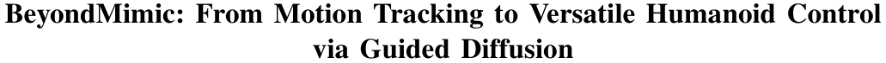
BeyondMimic：通过引导扩散实现从动作跟踪到多功能人形机器人控制
Qiayuan Liao∗1 , Takara E. Truong∗2 , Xiaoyu Huang∗1 , Guy Tevet2 , Koushil Sreenath†1 and C. Karen Liu†2
核对原版排版
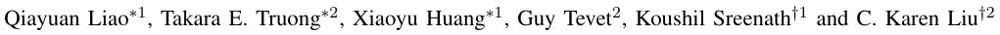
Qiayuan Liao∗1 , Takara E. Truong∗2 , Xiaoyu Huang∗1 , Guy Tevet2 , Koushil Sreenath†1 and C. Karen Liu†2
Abstract — Learning skills from human motions offers a promising path toward generalizable policies for versatile humanoid whole-body control, yet two key cornerstones are missing: (1) a high-quality motion tracking framework that faithfully transforms large-scale kinematic references into robust and extremely dynamic motions on real hardware, and (2) a distillation approach that can effectively learn these motion primitives and compose them to solve downstream tasks. We address these gaps with BeyondMimic, a real-world framework to learn from human motions for versatile and naturalistic humanoid control via guided diffusion. Our framework provides a motion tracking pipeline capable of challenging skills such as jumping spins, sprinting, and cartwheels with state-of-theart motion quality. Moving beyond simply mimicking existing motions, we further introduce a unified diffusion policy that enables zero-shot task-specific control at test time using simple cost functions. Deployed on hardware, BeyondMimic performs diverse tasks at test time, including waypoint navigation, joystick teleoperation, and obstacle avoidance, bridging simto-real motion tracking and flexible synthesis of human motion primitives for whole-body control. https://beyondmimic. github.io/.
核对原版排版
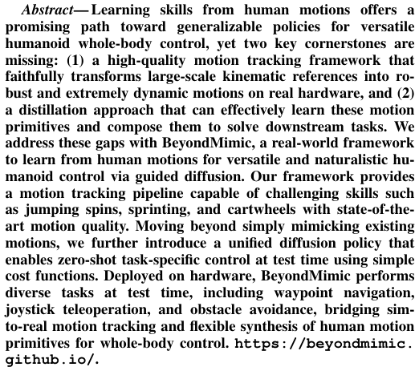
摘要——从人类动作中学习技能为实现面向通用人形机器人全身控制的可泛化策略提供了一条很有前景的途径，但目前仍缺少两个关键基石：(1) 一个高质量的动作跟踪框架，能够忠实地将大规模运动学参考转化为真实硬件上鲁棒且极具动态性的动作；(2) 一种能够有效学习这些运动基元并将其组合以解决下游任务的蒸馏方法。我们通过 BeyondMimic 弥补了这些差距，这是一个利用引导扩散从人类动作中学习以实现多功能且自然的人形机器人控制的真实世界框架。我们的框架提供了一个动作跟踪流程，能够以业内顶尖的动作质量完成诸如跳跃旋转、冲刺跑和侧手翻等高难度技能。超越单纯模仿现有动作的局限，我们进一步引入了一个统一的扩散策略，该策略在测试阶段仅利用简单的代价函数即可实现零样本任务特定控制。BeyondMimic 部署于硬件后，在测试阶段执行了多种任务，包括路径点导航、摇杆遥操作和避障，连接了动作跟踪的仿真到现实迁移与面向全身控制的人类运动基元灵活合成。https://beyondmimic. github.io/。
I. INTRODUCTION
核对原版排版
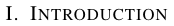
I. 引言
Learning from the rich diversity of human motion offers a promising path toward agile, human-like whole-body control in humanoid robots. Motion capture datasets contain diverse, dynamic behaviors, from stylish locomotion to complex whole-body motions, that, if transferred to robots, could form reusable building blocks for versatile, generalizable control across downstream tasks.
核对原版排版
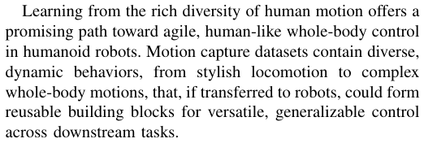
从丰富多样的人类动作中学习，为实现人形机器人敏捷、拟人的全身控制提供了一条很有前景的途径。动作捕捉数据集包含丰富多样的动态行为，从富有风格的移动步态到复杂的全身动作，如果能将其迁移到机器人上，便可构成可复用的构建模块，从而在各类下游任务中实现多功能、可泛化的控制。
Recent advances in physics-based character animation [1], [2], [3], [4], [5] have already shown incredible progress to synthesize human motions into dynamic behaviors for whole-body control to solve downstream tasks. However, these successes remain limited to simulation, where agents enjoy idealized dynamics, unlimited actuation, and perfect observations, unlike real-world humanoids that face unmodeled dynamics, hardware limits, and imperfect state estimation. Achieving similar capabilities on hardware requires two missing capabilities: (1) a scalable, high-quality motion tracking framework that transforms kinematic references into robust, highly-dynamic motions while avoiding overrandomization, jitter, and degraded motion quality seen in
核对原版排版
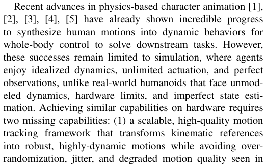
基于物理的角色动画 [1], [2], [3], [4], [5] 近期的进展已经在将人类动作合成为用于全身控制的动态行为以解决下游任务方面展现出巨大突破。然而，这些成功仍局限于仿真环境；在仿真中，智能体享有理想化的动力学、不受限的执行机构能力以及完美的观测，这与现实世界中面临未建模动力学、硬件限制以及不完美状态估计的人形机器人截然不同。要在硬件上实现类似能力，需要弥补两项缺失的能力：(1) 一个可扩展的高质量动作跟踪框架，它能将运动学参考转化为鲁棒且高度动态的动作，同时避免以往工作中出现的
∗ Equal contribution; order decided by coin toss.
核对原版排版
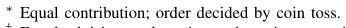
∗ 同等贡献；排名顺序由抛硬币决定。
† Equal advising; order mirrors the coin toss, with the other lab listed last.
核对原版排版
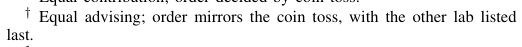
† 共同指导；顺序与抛硬币结果对应，另一个实验室列在最后。
1Q. Liao, X. Huang, and K. Sreenath are with the University of California, Berkeley, CA 94720, USA. { qiayuanl, haytham.huang, koushils } @berkeley.edu.
核对原版排版
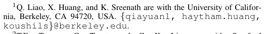
1Q. Liao、X. Huang 和 K. Sreenath 供职于加利福尼亚大学伯克利分校，CA 94720, USA。{ qiayuanl, haytham.huang, koushils } @berkeley.edu。
2T.E. Truong, G. Tevet, and C. K. Liu are with Stanford University, Stanford, CA 94305, USA. { takarat, guytevet, ckliu } @stanford.edu.
核对原版排版
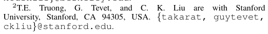
2T.E. Truong、G. Tevet 和 C. K. Liu 供职于斯坦福大学，Stanford, CA 94305, USA。{ takarat, guytevet, ckliu } @stanford.edu。
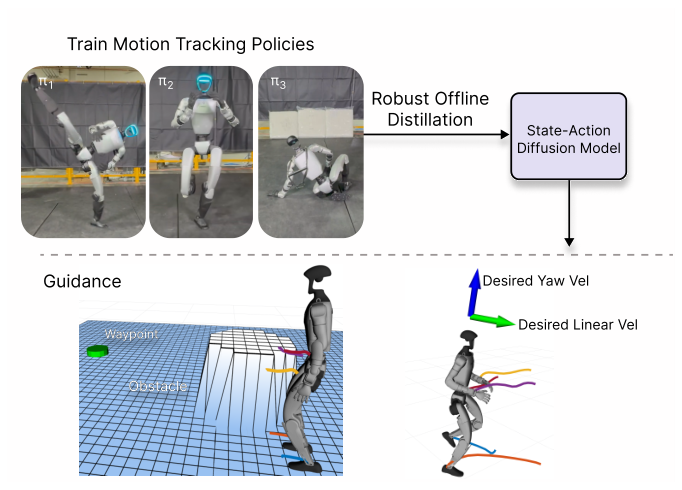
Fig. 1. Overview of BeyondMimic: We train robust motion tracking policies π for effective sim-to-real transfer, then perform offline distillation to learn a state-action diffusion model, and finally deploy the distilled policy on downstream tasks using guidance including waypoint navigation with obstacle avoidance (left) and joystick-based velocity control (right).
核对原版排版
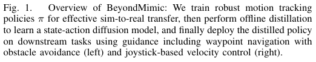
图 1. BeyondMimic 概述：我们训练鲁棒的动作跟踪策略 π 以实现有效的仿真到现实迁移，随后进行离线蒸馏以学习状态-动作扩散模型，最后通过引导将蒸馏得到的策略部署到下游任务中，包括带避障的路径点导航（左）和基于摇杆的速度控制（右）。
prior work, and (2) an effective sim-to-real recipe to distill learned motion primitives into a single policy capable of composing skills at test time for flexible, goal-driven control without retraining.
核对原版排版
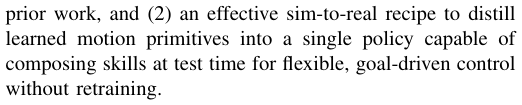
过度随机化、抖动和动作质量下降等问题；(2) 一套有效的仿真到现实迁移方案，将学到的运动基元蒸馏到单一策略中，该策略能够在测试阶段组合各项技能以实现灵活的目标驱动控制，而无需重新训练。
We introduce BeyondMimic, a real-world framework to address the above two challenges altogether. BeyondMimic first introduces a motion tracking pipeline that is able to perform highly dynamic motions, such as jumping spins, sprinting, and cartwheels, on real humanoid hardware with state-of-the-art motion quality. Beyond simply mimicking these human motions on humanoids, our framework further presents a unified guided-diffusion policy that synthesizes these motions or skills into novel motions for zero-shot, taskspecific control at test time using only simple cost functions, solving downstream tasks flexibly without additional retraining.
核对原版排版
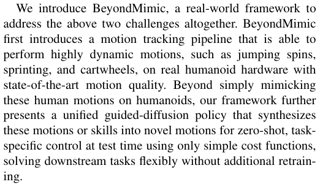
我们提出了 BeyondMimic，这是一个同时解决上述两大挑战的真实世界框架。BeyondMimic 首先引入了一个动作跟踪流程，能够以业内顶尖的动作质量在真实人形机器人硬件上执行诸如跳跃旋转、冲刺跑和侧手翻等高动态动作。除了在人形机器人上单纯模仿这些人类动作外，我们的框架还进一步提出了一种统一的引导扩散策略，该策略仅利用简单的代价函数即可在测试阶段将这些动作或技能合成为全新动作以进行零样本任务特定控制，灵活解决下游任务而无需额外重新训练。
We demonstrate BeyondMimic on a full sim-to-real pipeline: training robust tracking policies, distilling them into a diffusion-based controller, and deploying the result on physical hardware. Ultimately, our system performs a broad set of tasks, from waypoint navigation and joystick teleoperation to obstacle avoidance, all while preserving the naturalistic style and dynamic quality of the original human motions. By bridging gaps in sim-to-real transfer for both motion tracking and diffusion policy synthesis, BeyondMimic provides a practical foundation for advancing generalizable whole-body humanoid control. Our core
核对原版排版
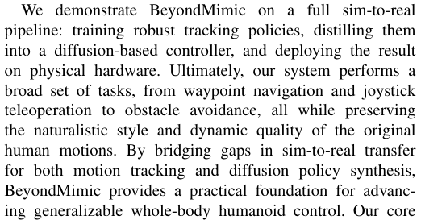
我们在完整的仿真到现实迁移流程上展示了 BeyondMimic：训练鲁棒的跟踪策略，将其蒸馏为基于扩散的控制器，并将结果部署在物理硬件上。最终，我们的系统执行了广泛的任务，从路径点导航和摇杆遥操作到避障，同时完好保留了原始人类动作的自然风格和动态质量。通过弥合动作跟踪和扩散策略合成在仿真到现实迁移中的差距，BeyondMimic 为推进可泛化的人形机器人全身控制提供了实用基础。我们的核心
展开第 1 页原版整页（含全部图表、公式与页眉页脚）
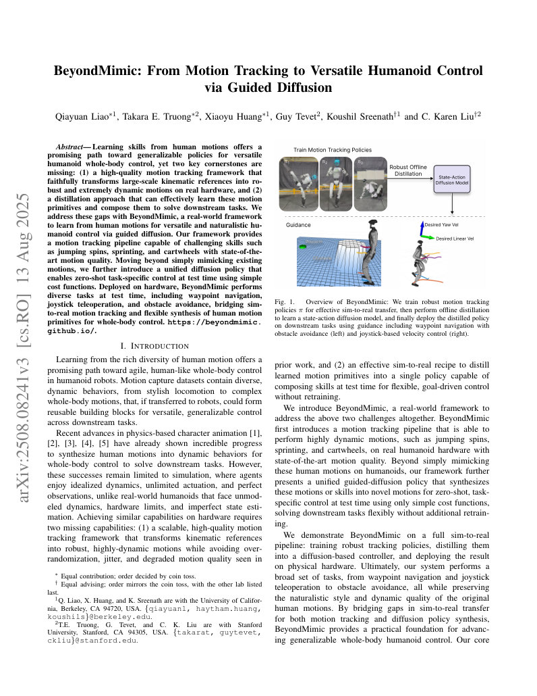
第 2 页Page 2PDF p.2
contributions are:
核对原版排版
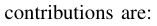
贡献如下：
- Scalable Motion Tracking : An open-source framework for training robust, high-quality, and highly dynamic motion tracking policies on real hardware, using a unified MDP and a single set of hyperparameters.
核对原版排版
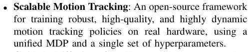
- 可扩展动作跟踪：一个开源框架，使用统一的 MDP 和单单一组超参数，在真实硬件上训练鲁棒、高质量且高动态的动作跟踪策略。
- Guided Diffusion for Humanoids : Demonstrating loss-guided diffusion for real-world humanoid wholebody control, enabling diverse downstream tasks via simple loss functions at test time, a capability not previously achievable with existing methods..
核对原版排版
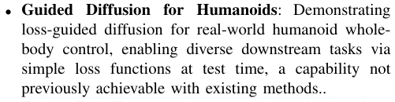
- 面向人形机器人的引导扩散：展示了用于真实世界人形机器人全身控制的损失引导扩散，在测试阶段通过简单的损失函数赋能多样化的下游任务，这是现有方法此前无法实现的能力。
- End-to-End Framework : A complete pipeline from raw motion capture to hardware deployment, including motion tracking, diffusion distillation, and real-world deployment, as shown in Fig 1.
核对原版排版
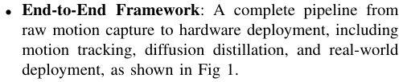
- 端到端框架：一个从原始动作捕捉到硬件部署的完整流程，包括动作跟踪、扩散蒸馏和真实世界部署，如图 1 所示。
II. RELATED WORK
核对原版排版
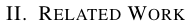
II. 相关工作
A. Motion Tracking
核对原版排版
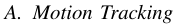
A. 动作跟踪
Early learning-based approaches to legged robot control focus on manually designing task-specific controllers [6], [7], [8], [9], which can produce robust locomotion but require extensive reward engineering for each task, lack naturalistic motion, and do not scale to the diverse skill set needed for general-purpose control. DeepMimic [10] offers an alternative by learning from human motion references to produce naturalistic, dynamically feasible behaviors while reducing the reward engineering burden, particularly suitable for humanoid robots. Since then, many tracking frameworks based on the DeepMimic paradigm have been developed.
核对原版排版
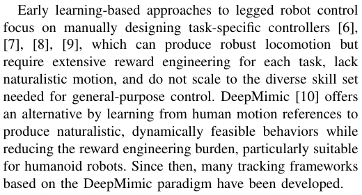
早期基于学习的足式机器人控制方法主要侧重于手动设计针对特定任务的控制器 [6], [7], [8], [9]，这些方法虽然能产生鲁棒的移动步态，但需要为每个任务进行大量的奖励工程设计，缺乏自然的动作表现，且无法扩展到通用控制所需的多样化技能集。DeepMimic [10] 提供了一种替代方案，它通过从人类动作参考中学习来生成自然且动态可行的行为，同时减轻了奖励工程的负担，尤其适用于人形机器人。自此以后，涌现出了许多基于 DeepMimic 范式的跟踪框架。
Earlier motion-tracking approaches typically rely on a small set of similar reference motions to train single-task policies. These policies are co-trained with task-specific rewards alongside the DeepMimic objective, producing controllers capable of performing one task in one style. Examples include quadrupedal locomotion [11] and goalkeeping [12], and bipedal jumping and running [13]. To enable more dynamic skills, ASAP [14] proposes to use a real-tosim pipeline that learns a delta action model from hardware experiments, improving simulation fidelity. However, this approach requires training motion-specific delta action models, which tend to overfit to the exact short motion. Similarly, KungfuBot [15] and HuB [16] achieve high-quality sim-toreal transfer with carefully hand-crafted domain randomization, but only for single short motions.
核对原版排版
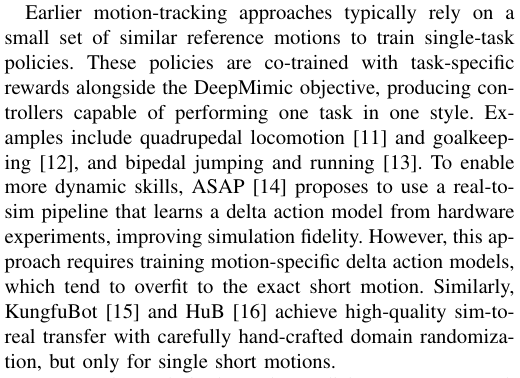
较早期的动作跟踪方法通常依赖一小部分相似的参考动作来训练单任务策略。这些策略在 DeepMimic 目标之外结合特定任务的奖励进行联合训练，从而生成能够以单一风格执行单个任务的控制器。例如四足移动 [11] 与守门 [12]，以及双足跳跃和奔跑 [13]。为了实现更高动态的技能，ASAP [14] 提出使用现实到仿真（real-to-sim）流程，从硬件实验中学习增量动作（delta action）模型，以提高仿真保真度。然而，该方法需要针对具体动作训练专门的增量动作模型，极易过拟合于特定的短动作。类似地，KungfuBot [15] 和 HuB [16] 通过精心手工设计的域随机化实现了高质量的仿真到现实迁移，但也仅适用于单个短动作。
To move beyond single-motion policies, recent research explores scalable motion-tracking frameworks that can learn a diverse set of motions within a single policy. In physicsbased animation, PHC [17] is a leading example of such a system, inspiring subsequent attempts in robotics to build general-purpose motion trackers. Early multi-motion trackers in robotics, such as OmniH2O [18], Exbody [19], and HumanPlus [20], demonstrate the feasibility of this approach but suffer significant motion quality degradation compared to their graphics counterparts. More recently, TWIST [21] enables good quality motion tracking but primarily for static motions, and similarly, CLONE [22] and UniTracker [23] focus mainly on low-dynamic walking motions with responsive upper-body tracking. On the other hand, GMT [24]
核对原版排版
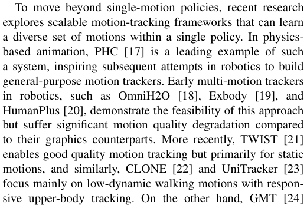
为了超越单动作策略，近期的研究探索了可扩展的动作跟踪框架，能够在单一策略中学习多样化的动作集。在基于物理的角色动画领域，PHC [17] 是此类系统的代表作，启发了机器人学界后续构建通用动作跟踪器的尝试。机器人学中早期的多动作跟踪器，如 OmniH2O [18]、Exbody [19] 和 HumanPlus [20]，证明了该路线的可行性，但与计算机图形学中的对应方法相比，其动作质量存在显著下降。最近，TWIST [21] 实现了良好质量的动作跟踪，但主要针对静态动作；类似地，CLONE [22] 和 UniTracker [23] 主要侧重于低动态的行走动作以及响应灵敏的上半身跟踪。另一方面，GMT [24]
handles some dynamic motions but sacrifices global trajectory tracking in favor of relative velocity tracking and gait regularization reward to improve robustness. Grandia et al. [25] present perhaps the highest-quality multi-motion tracking to date, but only on a small robot and without dynamic motions.
核对原版排版
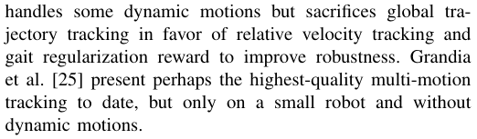
能够处理部分动态动作，但牺牲了全局轨迹跟踪，转而采用相对速度跟踪和步态正则化奖励来提高鲁棒性。Grandia 等人 [25] 展示了迄今为止质量可能最高的多动作跟踪，但仅在小型机器人上实现，且未包含动态动作。
To date, multi-motion tracking on real humanoid hardware with both high motion quality and support for highly dynamic skills has not been demonstrated. In this work, we aim to fill this gap by tracking diverse, minutes-long human references containing many distinct motions of varying style and difficulty.
核对原版排版
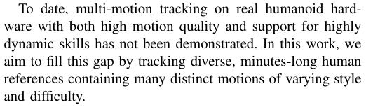
迄今为止，在真实人形机器人硬件上兼具高质量动作表现并支持高动态技能的多动作跟踪尚未得到实现。在本文中，我们旨在通过跟踪包含多种不同风格和难度动作的、长达数分钟的多样化人类参考动作来填补这一空白。
B. Diffusion in Robotics and Character Animation
核对原版排版
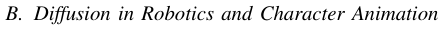
B. 机器人学与角色动画中的扩散模型
Denoising diffusion models are emerging as powerful policy generators in robotics and animation, as they naturally handle multi-modal distributions and long-horizon sequences. In character animation, kinematic diffusion models offer intuitive conditioning through text [26], music [27], geometric constraints [28], or loss functions [29]. These planners are often paired with a separate low-level controller for physical execution [28], [30]. However, this two-stage approach often suffers from a “planning-control gap,” where the planner produces out-of-distribution motions that the controller cannot robustly track [3]. This fragility is compounded by the challenge of selecting an appropriate replanning frequency: infrequent replanning struggles to adapt to environmental changes, while frequent replanning can prevent the agent from committing to a coherent strategy. While online replanning shows promise in simulation [30], it has yet to be validated in the real world.
核对原版排版
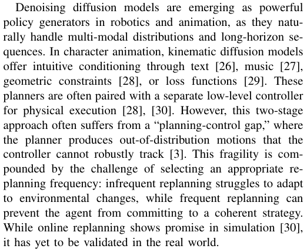
去噪扩散模型正在成为机器人学和动画领域强大的策略生成器，因为它们能够自然地处理多峰分布和长时界序列。在角色动画中，运动学扩散模型通过文本 [26]、音乐 [27]、几何约束 [28] 或损失函数 [29] 提供了直观的条件控制。这些规划器通常与独立的底层控制器配合进行物理执行 [28], [30]。然而，这种两阶段方法往往受制于“规划-控制差距”，即规划器生成的分布外动作无法被控制器鲁棒地跟踪 [3]。这种脆弱性又因选择合适重规划频率的困难而进一步加剧：低频重规划难以适应环境变化，而高频重规划则可能导致智能体无法坚持一致的策略。尽管在线重规划在仿真中展现出良好前景 [30]，但尚未在真实世界中得到验证。
To avoid the planning-control gap, another line of work focuses on learning a single, end-to-end policy that maps directly from state to an action distribution. This approach, Diffusion Policy [31], extends naturally to locomotion and character control. For example, DiffuseLoco [32], and BiRoDiff [33] learn unified policies that encode a wide range of skills, achieving smooth gait transitions and robust real-world deployment for quadruped robots. Meanwhile, PDP [34] extends the framework to physics-based animation, showing text prompt following and multi-modal behavior in push recovery. Using diffusion or flow matching policies in RL training also shows improved overall return and efficiency in motion tracking tasks [35]. While effective, such policies lack a mechanism for flexible test-time conditioning, such as loss-guided diffusion. This is because there is no straightforward way to compare a task goal defined in state space with an action sequence defined in joint space. As a result, conditioning on new tasks typically requires retraining.
核对原版排版
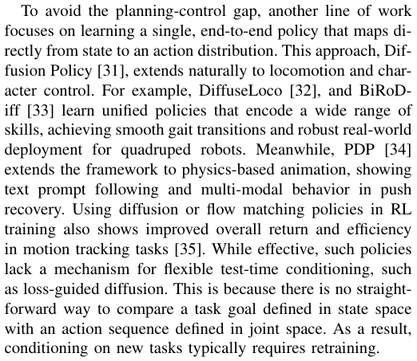
为避免规划-控制差距，另一条研究路线侧重于学习直接从状态映射到动作分布的单一端到端策略。这种方法，即 Diffusion Policy [31]，自然地拓展到了移动和角色控制领域。例如，DiffuseLoco [32] 和 BiRoDiff [33] 学习了编码广泛技能的统一策略，在四足机器人上实现了平滑的步态转换和鲁棒的真实世界部署。同时，PDP [34] 将该框架扩展到基于物理的动画中，展示了在推挤恢复中的文本提示遵循和多模态行为。在强化学习训练中使用扩散或流匹配策略，也在动作跟踪任务中表现出更高的总体回报和效率 [35]。尽管这些策略很有效，但缺乏灵活的测试阶段条件控制机制（例如损失引导扩散）。这是因为目前没有直接的方法将状态空间中定义的任务目标与关节空间中定义的动作序列进行对比。因此，基于新任务进行条件调节通常需要重新训练。
A third category of methods seeks to combine the flexible guidance of planners with the robustness of end-to-end policies by diffusing a joint distribution over both states and actions. This enables test-time guidance through classifierbased rewards [36] or conditioning on future state goals [37]. Diffuser [36] pioneered this approach for offline reinforcement learning but demonstrates limited robustness. Decision Diffuser [37] similarly models state-action trajectories but
核对原版排版
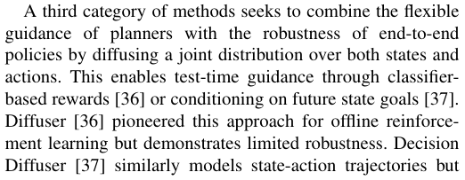
第三类方法试图通过对状态和动作的联合分布进行扩散，将规划器的灵活引导与端到端策略的鲁棒性结合起来。这使得在测试阶段能够通过基于分类器的奖励 [36] 或以未来状态目标为条件进行引导 [37]。Diffuser [36] 开创了将此方法用于离线强化学习的先河，但鲁棒性有限。Decision Diffuser [37] 同样对状态-动作轨迹进行建模，但
展开第 2 页原版整页（含全部图表、公式与页眉页脚）
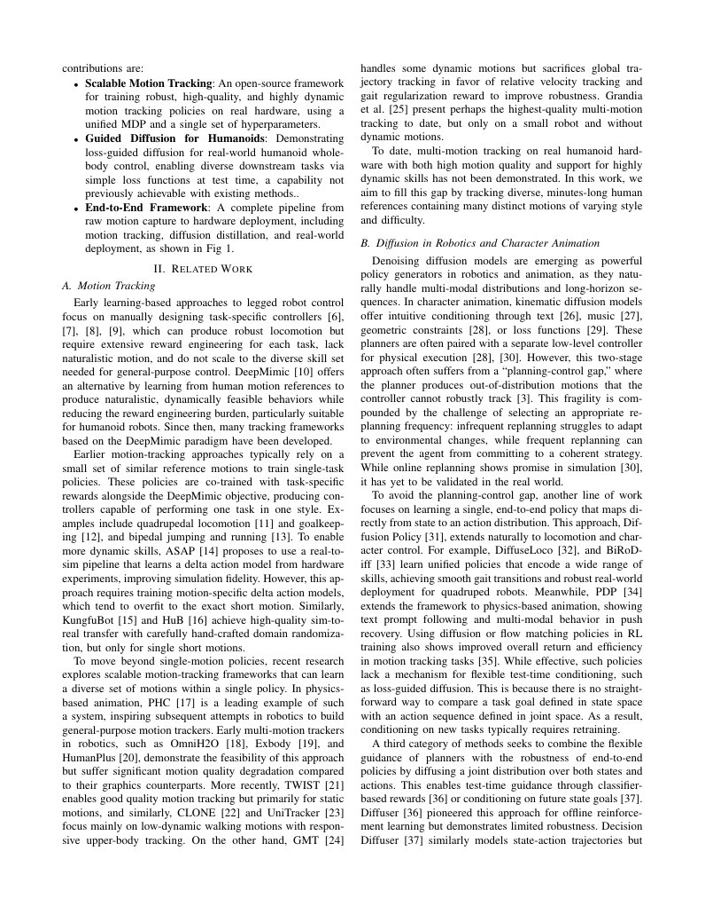
第 3 页Page 3PDF p.3
ultimately concludes that the actions lack robustness and replaces them with inverse dynamics post-processing. In contrast, Diffuse-CLoC [3] leverages robust offline distillation using PDP [34] and demonstrates strong performance in physics-based animation with this joint diffusion strategy. Nevertheless, applying guided, joint state-action diffusion models to complex real-world robotic control remains an open challenge, which we aim to solve in this work.
核对原版排版
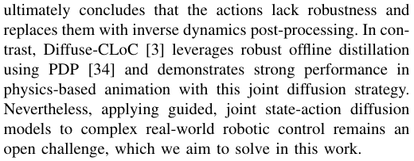
最终得出动作缺乏鲁棒性的结论，并用逆动力学后处理替代了动作。相比之下，Diffuse-CLoC [3] 利用 PDP [34] 进行鲁棒的离线蒸馏，并通过这种联合扩散策略在基于物理的角色动画中展现出强劲的性能。然而，将受引导的状态-动作联合扩散模型应用于复杂的真实世界机器人控制仍是一个开放性挑战，这也正是我们在本文中旨在解决的问题。
III. SCALEABLE MOTION TRACKING
核对原版排版
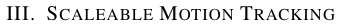
III. 可扩展动作跟踪
In this section, we detail the scalable pipeline for training motion-tracking policies. Using the same MDP and hyperparameters, the pipeline produces high-quality sim-toreal policies from minutes-long reference motions, demonstrating scalability across diverse motions. Note that since our tracking framework does not have a history, we omit timestep t in the formulation for clarity. We use the subscript m to denote quantities from the reference motion. Unless otherwise stated, all amounts in this section are expressed in the world frame.
核对原版排版
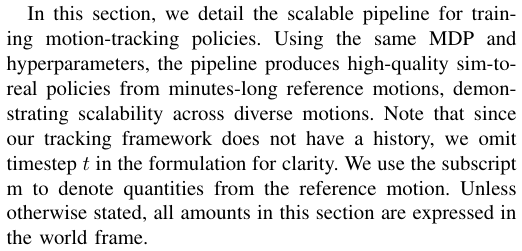
在本节中，我们详细介绍了用于训练动作跟踪策略的可扩展流程。使用相同的 MDP 和超参数，该流程能够从数分钟长的参考动作中生成高质量的仿真到现实迁移策略，展现了在多样化动作上的可扩展性。需要注意的是，由于我们的跟踪框架不包含历史信息，为清晰起见，我们在公式表达中省略了时间步 t。我们使用下标 m 表示来自参考动作的物理量。除非另有说明，本节中的所有量均在世界坐标系下表示。
A. Tracking Objective
核对原版排版
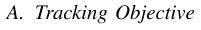
A. 跟踪目标
We start from the retargeted reference motion, represented as keyframes ( q m , v m) of generalized positions and velocities. Using forward kinematics, we obtain for each body b ∈B its pose Tb, m and twist Vb, m, where B is the set of all robot bodies. The goal is to reproduce the reference motion on hardware with high fidelity in global coordinates.
核对原版排版
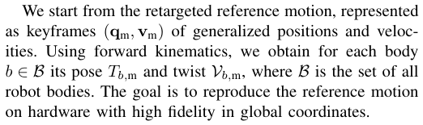
我们从重定向后的参考动作出发，该动作表示为广义位置与广义速度的关键帧 ( q m , v m)。利用正运动学，我们针对每个刚体 b ∈B 计算其位姿 Tb, m 和空间速度 Vb, m，其中 B 为机器人所有刚体的集合。目标是以高保真度在硬件上的全局坐标系中复现该参考动作。
Perturbations for robustness during training and the simto-real gap often lead to inevitable global drift. To preserve motion style while allowing such drift, the controller should not track absolute body poses.
核对原版排版
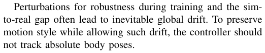
训练过程中用于提升鲁棒性的扰动以及仿真到现实的差距往往会导致不可避免的全局漂移。为了在允许这种漂移的同时保持动作风格，控制器不应跟踪刚体的绝对位姿。
Therefore, we select an anchor body b anchor ∈B , typically the root or torso, and anchor the motion reference to the desired tracking objective as follows: For the anchor body, use the reference motion directly: Tˆ b anchor = Tb anchor , m. For non-anchor bodies b ∈B \ {b anchor } , the desired pose is computed as Tˆ b = T ∆ Tb− anchor1 , mTb,m,whereTbanchor,misthe pose of the anchor body in reference motion, and T ∆ = ( p ∆ , R ∆) with p ∆ = [ pb anchor .x, pb anchor .y, pb anchor .z, m] and R ∆ = Rz (yaw( Rb anchor Rb⊤ anchor , m)).Thishybridtransform shifts the motion into the robot’s local frame by preserving height, aligning yaw, and translating the xy origin under the robot. Finally, the desired twists remain unchanged, i.e., V ˆ b = Vb, m , ∀b ∈B .
核对原版排版
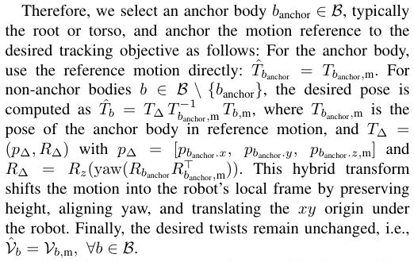
因此，我们选择一个锚定刚体 b anchor ∈B，通常为根节点或躯干，并将动作参考锚定到所期望的跟踪目标上，具体如下：对于锚定刚体，直接使用参考动作：Tˆ b anchor = Tb anchor , m。对于非锚定刚体 b ∈B \ {b anchor }，期望位姿计算为 Tˆ b = 〔行内公式见原版〕，其中 Tb anchor, m 是参考动作中锚定刚体的位姿，且 T ∆ = ( p ∆ , R ∆)，其中 p ∆ = [ pb anchor .x, pb anchor .y, pb anchor .z, m]，且 R ∆ = Rz (yaw( Rb anchor Rb⊤ anchor , m))。这种混合变换通过保持高度、对齐偏航角并将 xy 原点平移至机器人下方，将动作转换到机器人的局部坐标系中。最后，期望空间速度保持不变，即 V ˆ b = Vb, m , ∀b ∈B 。
Robots often have many closely spaced bodies. Tracking all of them is therefore inefficient and often unnecessary. Instead, we select a subset of target bodies B target ⊆ = B , forming the motion tracking objective as g tracking ( Tˆ b anchor , Tˆ b, Vˆ b ) , ∀b ∈B target.
核对原版排版
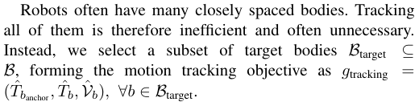
机器人通常具有许多间距很近的刚体。因此，跟踪所有刚体效率低下且往往没有必要。相反，我们选择目标刚体的一个子集 B target ⊆ = B，将动作跟踪目标构建为 g tracking ( Tˆ b anchor , Tˆ b, Vˆ b ) , ∀b ∈B target。
B. Observations
核对原版排版
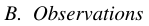
B. 观测
We formulate the policy observation space as a singletimestep vector comprising three components. (1) Reference phase. We include the joint positions and velocities from the reference motion, c = [ q joint,m , v joint,m], serving solely as phase information; the policy is not intended to track these
核对原版排版
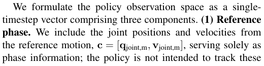
我们将策略观测空间构建为由三个组件组成的单时间步向量。(1) 参考相位：我们包含了来自参考动作的关节位置和关节速度 c = [ q joint,m , v joint,m]，仅用于提供相位信息；策略并非旨在跟踪这些
joint values directly. (2) Anchor pose-tracking error. We include the pose tracking error of the anchor body, ξb anchor ∈ R9 , which consists of the three-dimensional position error and the first two columns of the rotation error matrix [38]. Since the reference motion is predefined in the world frame, this term implicitly provides orientation for balancing and global position for correcting drift. (3) Other Proprioceptions. We include the robot’s root twist expressed in the root frame b root Vb root, joint positions q joint and velocities v joint, and the previous action a last.
核对原版排版
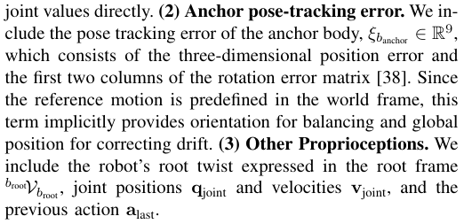
直接输入关节值。(2) 锚点位姿跟踪误差。我们引入了锚刚体的位姿跟踪误差 ξb anchor ∈ R9，它由三维位置误差以及旋转误差矩阵的前两列组成 [38]。由于参考动作是在世界坐标系中预先定义的，因此该项隐式提供了用于保持平衡的朝向信息以及用于消除漂移的全局位置信息。(3) 其他本体感觉信息。我们包含了在根坐标系下表示的机器人根部旋量 b root Vb root、关节位置 q joint 与速度 v joint，以及上一拍动作 a last。
The complete observation space is then o = [ c , ξb anchor ,broot Vb root , q joint , v joint , a last]. Note that when position drift compensation is unnecessary or reliable state estimation is unavailable, the linear components may be omitted (i.e., the translational part of ξb anchor and the linear component of b root Vb root).
核对原版排版
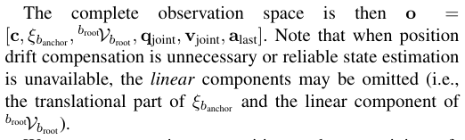
完整的观测空间即为 o = [ c , ξb anchor ,broot Vb root , q joint , v joint , a last]。需要注意的是，当无需进行位置漂移补偿或无法获取可靠的状态估计时，可以省略其中的线量成分（即 ξb anchor 的平移部分以及 b root Vb root 的线速度成分）。
We use asymmetric actor–critics to boost training efficiency. In addition to the policy observation, the critic also receives per-body relative poses w.r.t. the anchor, Tb− anchor1Tb,∀b ∈B, enabling it to estimate body-wise tracking errors directly in Cartesian space.
核对原版排版
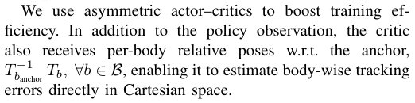
我们采用非对称 Actor-Critic 结构来提升训练效率。除策略观测外，Critic 还会接收各刚体相对于锚点的相对位姿 Tb− anchor1Tb,∀b ∈B，使其能够直接在笛卡尔空间中估计各个刚体的跟踪误差。
C. Joint Impedance and Actions
核对原版排版
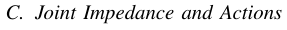
C. 关节阻抗与动作
Adding joint impedance is a standard approach in animation and robotics. Many works in character animation [10], [17], [34] adopt high impedance for precise tracking, effectively reducing the control in free-space to a nearly kinematic problem. However, policies trained under such high-impedance settings are often impractical for hardware deployment, as they amplify sensor noise, reduce the passive compliance needed for impact absorption, and hinder implicit torque information from current and prior commands. In comparison, we heuristically set joint stiffness and damping following Raibert et. al. [39]: k p ,j = Ijωn2, k d ,j = 2 Ijζωn , where ωn is the natural frequency, ζ is the damping ratio, and Ij = k g2 ,jImotor,jisthereflectedinertiaofthejth joint. We choose a damping ratio ζ = 2 (overdamped) rather than 1 (critically damped) as in Raibert et. al. [39], since the inertia is typically underestimated by considering only the motor armature and ignoring the apparent link inertia. The natural frequency is set to a relatively low value of 10 Hz, which promotes compliance with moderate gains.
核对原版排版
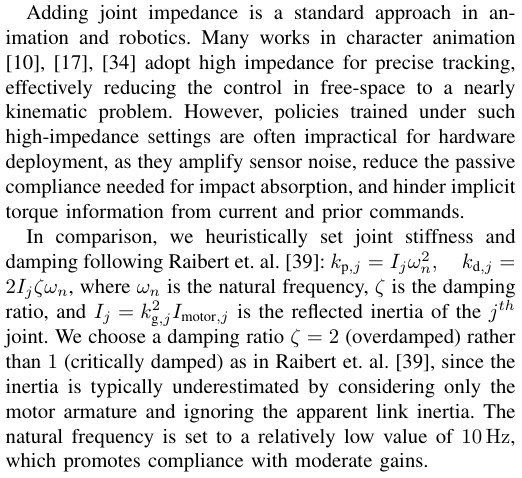
引入关节阻抗是动画与机器人学中的标准方法。角色动画领域的许多研究 [10], [17], [34] 采用高阻抗来实现精确跟踪，这有效地将自由空间中的控制简化为一个近乎纯运动学的问题。然而，在这种高阻抗设定下训练出的策略往往难以直接部署到硬件上，因为它们会放大传感器噪声，降低吸收冲击所需的被动柔顺性，并阻碍从当前及先验指令中获取隐式力矩信息。相比之下，我们参考 Raibert 等人 [39] 的方法启发式地设置关节刚度与阻尼：k p ,j = Ijωn2, k d ,j = 2 Ijζωn，其中 ωn 为固有频率，ζ 为阻尼比，Ij = k g2 ,jImotor,j 为第 j 个关节的折算转动惯量。我们选择阻尼比 ζ = 2（过阻尼），而非 Raibert 等人 [39] 中采用的 1（临界阻尼），因为如果仅考虑电机电枢而忽略视在连杆惯量，惯量通常会被低估。固有频率设定为相对较低的 10 Hz，从而以适度的增益提升柔顺性。
The policy action is designed as normalized joint position setpoints: q j,t = q ¯ j + αj a j,t , where a j,t is the policy action output, q ¯ j is a constant nominal joint configuration, αj = 0 . 25τ kj, p,jmax,withτj,maxrepresentingthemaximumallowable joint torque for joint j . This heuristic assumes that contacts generally occur around q ¯ j and that the robot hardware design ensures the maximum joint torque is proportional to the expected load. At low gains, these setpoints are not intended as desired position targets; rather, they serve as intermediate variables to generate desired torques, and are intentionally not clipped by joint kinematic limits.
核对原版排版
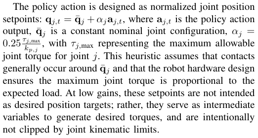
策略动作被设计为归一化的关节位置设定值：q j,t = q ¯ j + αj a j,t，其中 a j,t 为策略动作输出，q ¯ j 为恒定的标称关节构型，αj = 0 . 25τ kj, p,jmax，其中 τj,max 代表关节 j 的最大允许关节力矩。该启发式规则假设接触通常发生在 q ¯ j 附近，并且机器人硬件设计能够确保最大关节力矩与预期负载成正比。在低增益情况下，这些设定值并非用于充当期望的位置目标；相反，它们作为生成期望力矩的中间变量，并且有意不被关节运动学限位所截断。
D. Rewards
核对原版排版
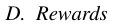
D. 奖励函数
We design the rewards in a simple, intuitive, and general way, consisting of (1) Task rewards as positive, uniformly
核对原版排版
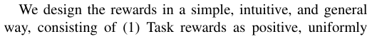
我们以简单、直观且通用的方式设计奖励函数，其包括：(1) 任务奖励，设定为正向、均匀
第 4 页Page 4PDF p.4
weighted, and expressed in task space; and (2) Minimal regularization penalties to avoid hurting tracking performance.
核对原版排版
加权并在任务空间中表示；以及 (2) 最少量的正则化惩罚项，以避免损害跟踪性能。
Task rewards are body tracking rewards. First, we compute error metrics for each target body b ∈B target based on the desired ( Tˆ b, Vˆ b ) and actual ( Tb, Vb ) poses and twists: e p,b = p ˆ b − p b , e R,b = log( Rˆ bRb⊤),ev,b=vˆb−vb,andew,b≈ w ˆ b − w b assuming the orientaion error is small. Then, the mean squared errors are computed across all target bodies: e ¯ χ = |B target1 | � b∈B target∥eχ,b∥2,χ∈{p, R, v, w}.Eacherror metric is then normalized using a Gaussian-style exponential function: r (¯ eχ, σ ) = exp � −e ¯ χ/σχ2 �, where σχ is a nominal error determined empirically.
核对原版排版
任务奖励即为刚体跟踪奖励。首先，我们基于期望位姿与旋量 ( Tˆ b, Vˆ b ) 以及实际位姿与旋量 ( Tb, Vb )，计算每个目标刚体 b ∈B target 的误差度量：e p,b = p ˆ b − p b , e R,b = log( Rˆ bRb⊤),ev,b=vˆb−vb，并且在假设朝向误差较小的前提下，ew,b≈ w ˆ b − w b。随后，计算所有目标刚体上的均方误差：〔行内公式见原版〕。接着，使用高斯形式的指数函数对每个误差度量进行归一化：〔行内公式见原版〕，其中 σχ 是通过经验确定的标称误差。
The combined task reward is then defined as:
核对原版排版
随后，组合任务奖励定义为：
For regularization, we include as few as three penalties critical for sim-to-real alignment. Among them, the joint limit penalty, r limit, encourages joint positions to remain within the soft limits. The action rate penalty, r smooth, encourages consecutive actions to be smooth, avoiding policies with excessive jitter. To penalize self-collision, we count the number of bodies where the self-contact force exceeds a predefined threshold as the total penalty, r contact, over the bodies b ∈B/ ee ⊆B , where B ee is the end-effector body set. The total reward then becomes:
核对原版排版
在正则化方面，我们仅引入了三项对仿真到现实迁移对齐至关重要的惩罚。其中，关节限位惩罚 r limit 促使关节位置保持在软限位内；动作变化率惩罚 r smooth 促进连续动作的平滑性，避免策略产生过度抖动。为了惩罚自碰撞，对于刚体集合 b ∈B/ ee ⊆B（其中 B ee 为末端执行器刚体集合），我们以自接触力超过预设阈值的刚体数量作为总惩罚 r contact。由此，总奖励函数为：
where λl, λs, λc > 0, define the reward weights.
核对原版排版
其中 λl, λs, λc > 0 定义了奖励权重。
Optionally, a global tracking reward for the anchor body b anchor can be added, following the same structure as r tracking but using errors e p,b anchor and e R,b anchor.
核对原版排版
作为可选项，还可以为锚刚体 b anchor 添加一个全局跟踪奖励，其结构与 r tracking 相同，但采用误差 e p,b anchor 和 e R,b anchor。
E. Termination and Reset
核对原版排版
E. 终止与重置
An episode terminates under two conditions, indicating either a fall or tracking failure: (1) when the height or orientation (considering only pitch and roll) errors of the anchor body b anchor exceed predefined thresholds, or (2) when any height of the end-effector body b ∈B ee deviates significantly from the reference trajectory.
核对原版排版
当满足以下两种情况之一时，一个 episode 即告终止，这表明发生跌倒或跟踪失败：(1) 锚刚体 b anchor 的高度或朝向（仅考虑俯仰角和横滚角）误差超过预设阈值；或 (2) 末端执行器刚体 b ∈B ee 的任意高度明显偏离参考轨迹。
At each episode reset, the motion phase is adaptively sampled from the entire reference trajectory (see Sec. III-F). The robot is initialized at the corresponding reference configuration and velocity, with additional random perturbations to enhance robustness.
核对原版排版
在每次 episode 重置时，动作相位会从整条参考轨迹中进行自适应采样（见 Sec. III-F）。机器人被初始化在对应的参考构型与速度状态，并施加额外的随机扰动以增强鲁棒性。
F. Adaptive Sampling
核对原版排版
F. 自适应采样
Training a long sequence of motion inevitably faces the problem that not all segments are equally difficult. Thus, uniform sampling over the entire trajectory, a common practice in prior works [14], [34], [17], often tends to oversample easy segments while undersampling hard ones, resulting in larger variance in rewards and training inefficiency.
核对原版排版
训练长动作序列不可避免地会面临这样一个问题：并非所有片段的难度都是相同的。因此，以往研究 [14], [34], [17] 中普遍采用的在整条轨迹上进行均匀采样的做法，往往容易对简单片段采样过度，而对困难片段采样不足，从而导致奖励方差增大以及训练效率低下。
Thus, it is natural to adaptively sample more frequently from harder regions. To achieve this, we divide the starting index of the entire motion into S bins of one second each and sample these bins according to empirical failure statistics.
核对原版排版
因此，顺理成章的做法是自适应地提高对较难区域的采样频率。为此，我们将整个动作的起始索引划分为 S 个区间（bin），每个区间时长为一秒，并根据经验失败统计数据对这些区间进行采样。
Let N s and F s be the counts of episodes and failures starting in Bin s. The failure rate is smoothed over time using an exponential moving average to prevent discrete jumps in sampling caused by short-term fluctuations.
核对原版排版
令 N s 和 F s 分别为起始于区间 s 的 episode 次数和失败次数。失败率会通过指数移动平均在时间上进行平滑处理，以防止短期波动导致采样概率出现离散突变。
Since failures are more likely caused by suboptimal actions taken shortly before termination, we apply a noncausal convolution with an exponentially decaying kernel k ( u ) = γu , where γ is the decay rate, to assign greater weight to recent past failures. The final sampling probability from Bin s is then:
核对原版排版
由于失败更可能是由终止发生前不久所采取的次优动作导致的，因此我们采用带有指数衰减核 k ( u ) = γu（其中 γ 为衰减率）的非因果卷积，从而为不久前的历史失败赋予更大权重。区间 s 的最终采样概率为：
where r ¯s is the smoothed failure rate of Bin s. We further mix the probability p s with a uniform distribution to preserve coverage of easier bins and mitigate catastrophic forgetting, using p′ s=λ B1+(1−λ)ps,whereλisthe uniform sampling ratio. Starting bins are then drawn from Multinomial( p 1′, . . . , p′ S),prioritizingchallengingregions.
核对原版排版
其中 r ¯s 是区间 s 的平滑失败率。我们进一步将概率 p s 与均匀分布进行混合，以保持对较简单区间的覆盖并缓解灾难性遗忘，计算公式为 p′ s=λ B1+(1−λ)ps，其中 λ 为均匀采样比例。随后从多项分布 Multinomial( p 1′, . . . , p′ S) 中抽取起始区间，从而优先采样具有挑战性的区域。
G. Domain Randomization
核对原版排版
G. 域随机化
We apply three domain randomization terms: the ground friction coefficient, default joint positions q ¯ j (for both actions and observations, effectively simulating joint offset calibration errors), and the torso’s center of mass position. Additionally, we introduce perturbations in the environment during training to encourage the robot to learn policies robust to environmental variability.
核对原版排版
我们应用了三个域随机化项：地面摩擦系数、默认关节位置 q ¯ j（同时应用于动作与观测，以有效模拟关节零点标定误差），以及躯干质心位置。此外，我们在训练期间向环境中引入扰动，以促使机器人学习对环境变化具有鲁棒性的策略。
IV. TRAJECTORY SYNTHESIS VIA GUIDED DIFFUSION
核对原版排版
IV. 基于引导扩散的轨迹合成
In this section, we present our state-action motion synthesis framework that enables task-specific control through guided diffusion. We first describe the training procedure, then detail the guidance mechanisms.
核对原版排版
在本节中，我们介绍了通过引导扩散实现特定任务控制的状态-动作动作合成框架。我们首先介绍训练流程，随后详述引导机制。
A. Training
核对原版排版
A. 训练
We employ Diffuse-CLoC [3] to create a state-action co-diffusion framework capable of generating physicallygrounded robot actions through guided sampling in state space. The model is trained to predict future trajectories, τ t = [ a t, s t +1 , . . . , s t + H , a t + H ], of a look-ahead horizon of H timesteps, conditioned on an observation history O t = [ s t−N , a t−N , · · · , s t ] of N steps of preceding state-action pairs. The training itself follows a standard denoising diffusion process. First, in a forward pass, we incrementally add Gaussian noise to ground-truth trajectories. A denoising network, x 0 ,θ , then learns to reverse this corruption. It takes a noised trajectory τ tk as input and is trained to predict the original, clean trajectory τ ˆ t0 = x 0 ,θ ( τ tk,Ot,k).The network’s parameters are optimized by minimizing the Mean Squared Error (MSE) loss against the ground truth:
核对原版排版
我们采用 Diffuse-CLoC [3] 构建状态-动作协同扩散框架，能够通过在状态空间中进行引导采样来生成符合物理规律的机器人动作。该模型经过训练，以由 N 个历史步的状态-动作对组成的观测历史 O t = [ s t−N , a t−N , · · · , s t ] 为条件，预测前视时域为 H 个时间步的未来轨迹 τ t = [ a t, s t +1 , . . . , s t + H , a t + H ]。训练本身遵循标准的前向去噪扩散过程。首先，在前向过程中，我们逐步向真实轨迹中添加高斯噪声。随后，去噪网络 x 0 ,θ 学习逆转这一加噪过程。它以带噪轨迹 τ tk 为输入，并经过训练以预测原始的干净轨迹 τ ˆ t0 = x 0 ,θ ( τ tk,Ot,k)。通过最小化针对真实轨迹的均方误差（MSE）损失函数来优化网络参数：
During inference, new trajectories are generated by starting with random noise and iteratively refining it using the
核对原版排版
在推理阶段，新轨迹的生成始于随机噪声，并通过迭代方式利用
第 5 页Page 5PDF p.5
learned denoising function, following the DDPM update rule [40]:
核对原版排版
学到的去噪函数进行逐步精细化，遵循 DDPM 更新规则 [40]：
Here, ϵθ ( · ) is the predicted noise derived from the clean trajectory estimate x 0 ,θ ( · ), α k , γ k , and σ k are DDPM coefficients. We use independent noise schedules for states and actions, denoted by k = ( ks , ka ).
核对原版排版
在此，ϵθ ( · ) 是由干净轨迹估计值 x 0 ,θ ( · ) 推导出的预测噪声，α k , γ k 以及 σ k 为 DDPM 系数。我们对状态和动作采用独立的加噪调度（noise schedule），记为 k = ( ks , ka )。
B. Guidance
核对原版排版
B. 引导
To direct the model toward specific objectives during inference, we use classifier guidance. Through Bayes’ theorem [41], the score of a conditional distribution is decomposed into the model’s learned unconditional score and a separate guidance term:
核对原版排版
为了在推理过程中引导模型朝向特定目标生成，我们采用了分类器引导（classifier guidance）。利用贝叶斯定理 [41]，条件分布的 score（得分函数）被分解为模型学到的无条件 score 与一个独立的引导项：
where τ∗ is the optimal trajectory. In our application, this guidance term is a differentiable, task-specific cost function, Gc ( τ ). By establishing a relationship between the cost and the conditional likelihood, p ( τ∗ | τ ) ∝ exp( −G c( τ )), the guidance term simplifies to the negative gradient of the cost: −∇ τ G c( τ ).
核对原版排版
其中 τ∗ 为最优轨迹。在我们的应用中，该引导项是一个可微的特定任务代价函数 Gc ( τ )。通过在代价与条件似然之间建立关系 p ( τ∗ | τ ) ∝ exp( −G c( τ ))，该引导项简化为代价的负梯度：−∇ τ G c( τ )。
This gradient provides a signal that drives the sampling process toward lower-cost regions of the trajectory space. This approach is highly versatile, enabling a single pretrained model to be adapted to diverse objectives at inference time. We demonstrate this by evaluating our framework on three representative tasks, each defined by different types of trajectory constraints.
核对原版排版
该梯度提供了一个驱动信号，促使采样过程向轨迹空间中代价更低的区域推进。这种方法具有高度的通用性，使得单个预训练模型在推理阶段即可适配多种不同目标。我们通过在三个代表性任务上评估该框架来证明这一点，每个任务均由不同类型的轨迹约束所定义。
C. Downstream Tasks
核对原版排版
C. 下游任务
We show joystick steering, waypoint navigation, and obstacle avoidance as examples of task-specific cost functions. For joystick steering, we define the cost function as the squared difference between the state prediction and the joystick input:
核对原版排版
我们以手柄摇杆转向、航点导航以及障碍物避障为例，展示特定任务代价函数的设计。对于摇杆转向任务，我们将代价函数定义为状态预测值与摇杆输入值之间的差值平方：
where τ is the predicted trajectory at timestep t , Vxy,t pulls out the planar root velocity at timestep t and gv ∈ R2 is the goal root velocity from the joystick controller.
核对原版排版
其中 τ 为时间步 t 处的预测轨迹，Vxy,t 提取出时间步 t 处的平面根节点速度，gv ∈ R2 为来自摇杆控制器的目标根节点速度。
For the waypoint task, the cost function rewards proximity to the target while increasingly penalizing velocity as the agent gets closer, ensuring a stop upon arrival.
核对原版排版
对于航点任务，代价函数在奖励接近目标的同时，随着智能体靠近目标越来越严厉地惩罚速度，从而确保其到达目标时能够停止。
where d = ∥Px ( s t′ ) − gp∥ is the current scalar distance from the goal gp , detached from the gradient computation.
核对原版排版
其中 d = ∥Px ( s t′ ) − gp∥ 是当前到目标 gp 的标量距离，且不参与梯度计算。
For collision avoidance, we build a Signed Distance Field (SDF) to obtain the distance and gradient between body
核对原版排版
为了实现避障，我们构建了符号距离场（SDF），以获取身体
positions and the nearest object, and define the cost function as:
核对原版排版
位置与最近物体之间的距离和梯度，并将代价函数定义为：
where P b,t ( τ ) is the position of body b at time t given trajectory τ , ri is the approximation sphere radius of body b , and B ( x, δ ) is a relaxed barrier function [42]:
核对原版排版
其中 P b,t ( τ ) 表示在给定轨迹 τ 时刚体 b 在时间 t 的位置，ri 是刚体 b 的近似球体半径，而 B ( x, δ ) 为松弛屏障函数 [42]：
V. MOTION TRACKING EXPERIMENTS AND RESULTS
核对原版排版
V. 运动跟踪实验与结果
This section presents the experimental validation of the motion tracking framework through both simulation and realworld deployment on the Unitree G1 humanoid robot, showing high-quality, robust and highly dynamic motions. Note that we train all policies with the same set of hyperparameters throughout this section.
核对原版排版
本节通过仿真以及在 Unitree G1 人形机器人上的实物部署，对运动跟踪框架进行实验验证，展现出高质量、鲁棒且高度动态的运动。需要说明的是，在本节中我们使用同一组超参数训练所有策略。
A. Sim-to-Sim Performance
核对原版排版
A. Sim-to-Sim 性能
We use the LAFAN1 dataset [43], retargeted by Unitree, which includes diverse and agile human motions such as sprinting, turning jumps, and crawling, along with short single-motion clips from prior works [16], [14]. The LAFAN1 dataset contains 40 several-minute-long references, each in a broad category with many distinct motions within that category. We randomly select 25 of these references, ensuring at least one from each category, and find that all can be completed in full during sim-to-sim evaluation. Due to the limited space of our test field, we purposely select 29 challenging clips from these references, each featuring dynamic and contact-rich behaviors, and test them on hardware to evaluate the sim-to-real transfer performance. The complete list of motions we have tested in sim-to-sim and sim-to-real transfer is available in Table I.
核对原版排版
我们使用经 Unitree 重定向后的 LAFAN1 数据集 [43]，其中包含冲刺、转身跳跃和爬行等多样且敏捷的人体运动，以及来自先前工作 [16]、[14] 的简短单动作片段。LAFAN1 数据集包含 40 条时长数分钟的参考动作，每条分属不同的大类，且每个大类内部包含许多不同的动作。我们从中随机选取了 25 条参考动作，确保每个类别至少包含一条，并在 sim-to-sim 评估中发现所有动作均能被完整执行。由于测试场地空间有限，我们特意从这些参考动作中选取了 29 个具有挑战性的片段（每个片段均具有动态且富含接触的行为特征），并在真实硬件上进行测试以评估其仿真到现实迁移（sim-to-real）性能。我们在 sim-to-sim 和 sim-to-real 迁移中测试的完整动作列表见 Table I。
B. Real-world Experiment Setup
核对原版排版
B. 真实世界实验设置
We deploy our motion tracking policies, trained using the proposed method, on the Unitree G1 humanoid robot. All deployment code is written in C++ and optimized for realtime execution. Full-state estimation is provided at 500 Hz using a low-level generalized momentum observer combined with a Kalman filter [44]. Notably, no external motion capture system is used for tracking.
核对原版排版
我们将使用所提方法训练的运动跟踪策略部署在 Unitree G1 人形机器人上。所有部署代码均使用 C++ 编写，并针对实时执行进行了优化。系统采用底层广义动量观测器结合卡尔曼滤波器 [44]，以 500 Hz 的频率提供全状态估计。值得注意的是，跟踪过程未采用任何外部动作捕捉系统。
For extreme, contact-rich behaviors (e.g., getting up from the ground), we either incorporate LiDAR-inertial odometry (LIO) [45] for position correction or exclude stateestimation-dependent observations altogether.
核对原版排版
对于极端且富含接触的行为（例如从地面爬起），我们要么引入激光雷达-惯性里程计（LIO）[45] 进行位置校正，要么完全剔除依赖状态估计的观测。
All policies are executed onboard using ONNX Runtime [46] on the robot’s CPU. Each inference step takes under 1 . 0 ms, allowing seamless integration into the realtime estimation and control loop.
核对原版排版
所有策略均使用 ONNX Runtime [46] 在机器人的机载 CPU 上运行。单步推理耗时不足 1.0 ms，从而能够无缝集成到实时估计与控制闭环中。
第 6 页Page 6PDF p.6
TABLE I
核对原版排版
TABLE I
MOTION SEGMENTS TESTED IN SIM AND REAL.
核对原版排版
在仿真与实物中测试的动作片段。
C. Real-world Performance
核对原版排版
C. 真实世界表现
We categorize and showcase four distinct classes of motion to demonstrate the superior performance, versatility, and generality of our motion tracking framework. Our evaluation includes challenging motions previously demonstrated by specialized frameworks, as well as novel sequences that have not, to our knowledge, been shown in prior works.
核对原版排版
我们将运动划分为四个不同的类别并进行展示，以证明我们的运动跟踪框架所具备的卓越性能、多功能性与通用性。我们的评估不仅涵盖先前由专用框架所展示过的具有挑战性的动作，还包括据我们所知在以往工作中从未展示过的全新动作序列。
a) Short Dynamic Motions Previously Demonstrated: We begin with dynamic motions that have been featured in earlier works specialized in these motions, such as Cristiano Ronaldo’s iconic celebration from ASAP [14] and a sidekick from KungfuBot [15]. Our system exhibits remarkable robustness in tracking these complex motions. Notably, while prior works demonstrate only single instances, our framework is capable of repeating these motions five times in succession by manually toggling the controller, without any degradation in stability or tracking quality.
核对原版排版
a) 先前已展示过的简短高动态动作：我们首先测试了在以往专精于此类动作的工作中展示过的高动态动作，例如来自 ASAP [14] 的克里斯蒂亚诺·罗纳尔多（Cristiano Ronaldo）标志性庆祝动作，以及来自 KungfuBot [15] 的侧踢动作。我们的系统在跟踪这些复杂动作时展现出了卓越的鲁棒性。值得注意的是，以往工作仅展示了单次执行的效果，而我们的框架能够通过手动切换控制器连续五次重复执行这些动作，且稳定性和跟踪质量没有任何下降。
b) Static Motions Requiring Strong Balance: We next consider motions that demand high levels of balance and postural control, including single-leg standing and the Swallow Exercise Balance from HuB [16]. Unlike HuB, which relies on task-specific domain randomization and parameter tuning for each motion, our framework completes these tasks using the same hyperparameters across all other motions. Although our policies may experience occasional recoveries, the motions can be completed successfully, highlighting the generality and robustness of our approach.
核对原版排版
b) 需要高度平衡的静态动作：接下来我们考虑对平衡和姿态控制要求极高的动作，包括单腿站立以及来自 HuB [16] 的燕式平衡动作。与依赖特定任务的域随机化以及针对每种动作分别调参的 HuB 不同，我们的框架使用与其他所有动作完全相同的超参数完成了这些任务。尽管我们的策略偶尔可能会出现调整动作以恢复平衡，但这些动作均能成功完成，突显了我们方法的通用性与鲁棒性。
c) Extremely Dynamic and Previously Undemonstrated Motions: We push the limits of humanoid motion tracking by executing highly dynamic motions that have not, to our knowledge, been demonstrated by existing research (with the possible exception of Boston Dynamics Atlas). These include double- and single-leg hopping, two cartwheels in a row, out-and-back sprints, and forward jumps with 180◦ and 360◦ spins. Motions like the 360◦ spin jump are physically demanding even for adult humans, yet our policy performs them fluidly and reliably. Remarkably, these are not isolated clips, but parts of the three-minute long references , highlighting our framework’s ability to scale to long motion sequences while preserving both precision and extreme agility hidden in the dataset.
核对原版排版
c) 极限高动态且以往未曾展示过的动作：我们通过执行据我们所知在现有研究中从未展示过的高动态动作（Boston Dynamics Atlas 可能除外），进一步拓展了人形机器人运动跟踪的极限。这些动作包括双腿及单腿跳跃、连续两次侧手翻、折返冲刺，以及带有 180◦ 和 360◦ 空中转体的向前跳跃。像 360◦ 转体跳跃这样的动作，即使对成年人类来说也极耗体能，但我们的策略依然能够流畅且可靠地完成。值得注意的是，这些动作并非孤立的片段，而是长达三分钟的参考动作的一部分，这彰显了我们的框架在扩展到长动作序列的同时，能够充分保留数据集中蕴含的高精度与极限敏捷性。
d) Stylized and Expressive Motions: Last but not least, a fundamental objective of motion tracking is not only to execute motions stably, but to capture the stylistic elements that make them recognizably human. A framework should therefore be trained not just to avoid falling , but to preserve the timing, posture, and expression inherent in the original motion. Among the most stylistically rich categories in motion datasets are dancing and walking with diverse gaits. To this end, we demonstrate a wide variety of stylized motions, including the Charleston dance, Moonwalk, transitions from walking to crawling, elderly-style walking, and sport movements such as badminton and tennis. Our framework faithfully retains these stylistic features, producing motions that are instantly recognizable to casual observers. This highlights the capacity of our framework to go beyond stability to deliver high-fidelity, human-like behavior.
核对原版排版
d) 风格化与表现力动作：最后同样重要的是，运动跟踪的根本目标不仅在于稳定地执行动作，还在于捕捉那些能让人一眼认出属于人类特征的风格元素。因此，框架的训练不仅是为了防止摔倒，更是为了保留原始动作固有的节奏、姿态和表现力。在动作数据集中，风格最丰富的类别包括舞蹈以及具有多样化步态的行走。为此，我们展示了种类繁多的风格化动作，包括查尔斯顿舞（Charleston dance）、太空步（Moonwalk）、从行走到爬行的过渡、老年步态行走，以及羽毛球和网球等体育运动动作。我们的框架忠实地保留了这些风格特征，生成的动作能让普通观察者立即辨识出来。这凸显了我们的框架在保证稳定性的基础上，进一步呈现高保真、拟人化行为的能力。
By successfully executing a wide spectrum of motions—ranging from static to highly dynamic, from wellstudied to newly demonstrated, and from athletic feats to stylized motions—we show that our framework is robust and accurate, and scalable, expressive, and broadly applicable . These results demonstrate a unified motion-tracking system that attains this breadth and quality without task-specific tuning.
核对原版排版
通过成功执行涵盖从静态到高动态、从已深入研究到全新展示、从高难度体育动作到风格化动作等极其广泛的运动，我们证明了我们的框架具备鲁棒性、精确性、可扩展性、表现力以及广泛的适用性。这些结果展示了一个统一的运动跟踪系统，无需针对特定任务进行调优即可达到如此的广度与质量。
D. Ablation on Adaptive Sampling
核对原版排版
D. 自适应采样的消融实验
We ablate adaptive sampling during training to evaluate its effectiveness, using convergence speed as the metric. Convergence is defined as completing the entire motion in the simto-sim evaluation. As shown in Table II, adaptive sampling is critical for learning difficult segments in long motion sequences. Without it, all the long sequences listed failed sim-to-sim evaluation in mujoco [47] even after 30k training
核对原版排版
我们在训练中对自适应采样进行了消融实验以评估其有效性，并以收敛速度作为评估指标。收敛被定义为在 sim-to-sim 评估中完整完成整个动作。如 Table II 所示，自适应采样对于学习长动作序列中的困难片段至关重要。若没有自适应采样，所有列出的长序列在 mujoco [47] 中即使经过 30k 次训练
第 7 页Page 7PDF p.7
TABLE II
核对原版排版
TABLE II
ABLATION ON ITERATIONS TO CONVERGENCE WITH ADAPTIVE
核对原版排版
采用自适应达到收敛所需迭代次数的消融实验
SAMPLING (AS)
核对原版排版
采样（AS）
iterations, stalling at challenging motions such as balancing and cartwheels. With adaptive sampling, these sequences converged in only 10k iterations. Even for short motions like Cristiano Ronaldo from ASAP [14], adaptive sampling halved the required iterations (1.5k vs. 3k). These results demonstrate that adaptive sampling significantly accelerates training and improves robustness.
核对原版排版
迭代后也未能通过，停滞在诸如平衡和侧手翻等极具挑战性的动作上。而在采用自适应采样后，这些序列仅在 10k 次迭代内便实现收敛。即使对于诸如 ASAP [14] 中的克里斯蒂亚诺·罗纳尔多（Cristiano Ronaldo）庆祝动作这类简短动作，自适应采样也使所需迭代次数减半（1.5k 对比 3k）。这些结果表明，自适应采样能够显著加速训练并提升鲁棒性。
VI. DIFFUSION EXPERIMENTS AND RESULTS
核对原版排版
VI. 扩散实验与结果
For the guided diffusion policy, we test key ablations for its sim-to-real transfer. In particular, we examine the role of the state representation and demonstrate that selecting the appropriate representation is critical for performance.
核对原版排版
针对引导扩散策略，我们对其仿真到现实迁移（sim-to-real）的关键因素进行了消融实验。具体而言，我们考察了状态表示的作用，并证明选择合适的状态表示对性能至关重要。
A. Data
核对原版排版
A. 数据
We use a subset of AMASS [48] and LAFAN1 [43] containing diverse walking motions. We train motion tracking controllers for each motion skill to generate action labels.
核对原版排版
我们使用了 AMASS [48] 和 LAFAN1 [43] 中包含多样化行走动作的一个子集。我们针对每种运动技能训练了运动跟踪控制器，以生成动作标签。
Since diffusion models require multiple denoising steps during inference, there is a significant enough delay between receiving an observation and commanding an action. To account for this latency, we include action delay domain randomization during training,
核对原版排版
由于扩散模型在推理过程中需要多个去噪步骤，因此从接收到观测到下发动作指令之间存在不可忽视的显著延迟。为了应对这种延迟，我们在训练期间引入了动作延迟的域随机化，
Once the trackers are trained, we follow a data collection procedure similar to PDP [34] and Diffuse-CLoC [3], where offline datasets are collected by rolling out the expert policy but with domain randomization added as a key difference.
核对原版排版
在跟踪器训练完成后，我们遵循类似于 PDP [34] 和 Diffuse-CLoC [3] 的数据采集流程，通过展开专家策略（rollout）来收集离线数据集，而关键区别在于我们引入了域随机化。
B. Experiment Setup
核对原版排版
B. 实验设置
We train BeyondMimic using an observation history of N = 4 and predict a future horizon of H = 16. We limit the action prediction horizon to 8 steps through loss masking. The model uses a Transformer decoder with 6 layers, 4 attention heads, and a 512-dimensional embedding, totaling 19.95M parameters. Training is performed with 20 denoising steps and an attention dropout probability of 0 . 3.
核对原版排版
我们使用 N = 4 的历史观测步数来训练 BeyondMimic，并预测 H = 16 的未来时域。我们通过损失掩码（loss masking）将动作预测时域限制为 8 步。该模型采用一个包含 6 层、4 个注意力头和 512 维嵌入的 Transformer 解码器，参数总量为 19.95M。训练过程中采用 20 个去噪步数，注意力 dropout 概率为 0.3。
At test time, the diffusion policy runs offboard using TensorRT on an NVIDIA RTX 4060 Mobile GPU. Inference is performed asynchronously in a separate thread due to latency; each step takes approximately 20 ms using 20 denoising steps. Gradients of the guiding cost are computed automatically using CppAD [49] within each denoising iteration. For the joint diffusion model, motion capture data is used to provide both environmental context for cost computation and improved state estimation in evaluation.
核对原版排版
在测试阶段，扩散策略通过 TensorRT 在机外的 NVIDIA RTX 4060 Mobile GPU 上运行。考虑到延迟，推理在独立的线程中异步执行；采用 20 个去噪步数时，每步耗时约为 20 ms。在每次去噪迭代中，引导代价的梯度均通过 CppAD [49] 自动计算。对于关节扩散模型，动作捕捉数据既用于提供计算代价所需的环境上下文，也用于在评估中提供更优的状态估计。
TABLE III
核对原版排版
TABLE III
SUCCESS RATE ON DIFFUSION STATE REPRESENTATION ABLATION
核对原版排版
扩散模型状态表示消融实验的成功率
C. Tasks and Metrics
核对原版排版
C. 任务与评估指标
We evaluate our method on two tasks:
核对原版排版
我们在两项任务上评估我们的方法：
- Walk-Perturb: During a 15-second walk, we apply instantaneous root velocity perturbations sampled uniformly from 0 to 0 . 5 m/s once every second. We measure the fall rate in simulation.
核对原版排版
- Walk-Perturb：在15秒的行走过程中，我们每秒施加一次从0到0.5 m/s均匀采样的瞬时根节点速度扰动。我们在仿真中测量跌倒率。
- Joystick Control: We issue a sequence of directional commands: forward, backward, turn left, turn right—each lasting 3 seconds. Failure to follow commands or maintain balance is counted as a failure.
核对原版排版
- Joystick Control：我们给出一系列方向指令：前进、后退、左转、右转——每个指令持续3秒。未能执行指令或未能保持平衡均被视为失败。
- A fall is defined as any episode where the head height - drops below 0 . 2 m. Each experiment is run 50 times.
核对原版排版
- 跌倒定义为头部高度降至0.2 m以下的任何回合。每个实验均进行50次。
D. State Representation Ablation
核对原版排版
D. 状态表示消融实验
Choosing an appropriate state representation is critical for successful sim-to-real transfer. Local joint representations offer compactness and computational efficiency, making them attractive for real-time control applications. In contrast, predicting body positions directly requires larger representations and correspondingly larger models with increased inference time, but provides explicit spatial grounding in Cartesian coordinates. This tradeoff between computational efficiency and spatial interpretability raises the question of which encoding best supports diffusion learning while ensuring successful sim-to-real transfer. To address this question, we compare two representations:
核对原版排版
选择合适的状态表示对于成功的仿真到现实迁移至关重要。局部关节表示具有紧凑性和计算高效性，因而在实时控制应用中极具吸引力。相比之下，直接预测刚体位置需要更大的表示维度以及相应更大的模型，并增加了推理时间，但能在笛卡尔坐标系中提供明确的空间定位。这种计算效率与空间可解释性之间的权衡引出一个问题：哪种编码方式既能最好地支持扩散学习，又能确保成功的仿真到现实迁移？为了解决这一问题，我们比较了两种表示：
- Body Pos State
核对原版排版
- Body Pos 状态
- Global States: Root position (R3 ), linear velocity (R3 ), and orientation represented as a rotation vector (R3 ). These are expressed relative to the character frame at the current timestep.
核对原版排版
- 全局状态：根节点位置（R3）、线速度（R3），以及用旋转向量表示的朝向（R3）。这些均相对于当前时间步的角色坐标系表示。
- Local States: Cartesian positions (R3B ), and linear velocities (R3B ) of all bodies, expressed in the character frame at each timestep.
核对原版排版
- 局部状态：所有刚体的笛卡尔位置（R3B）和线速度（R3B），在每个时间步均在角色坐标系中表示。
- Joint Pos State
核对原版排版
- Joint Pos 状态
- Global States: Same as above—root position, velocity, and orientation as rotation vectors relative to the current frame.
核对原版排版
- 全局状态：同上——相对于当前坐标系的根节点位置、速度，以及作为旋转向量的朝向。
- Local States: Joint angles (RJ ), where J is the number of joints, and joint velocities (RJ ).
核对原版排版
- 局部状态：关节角度（RJ，其中 J 为关节数量）和关节速度（RJ）。
Table III depicts the performance of each representation for each of the two evaluated tasks. We find that the BodyPos state representation significantly outperforms Joint-Pos across both tasks. While Joint-Rot is theoretically more Markovian, small errors in joint position estimates accumulate through the kinematic chain, making this representation more susceptible to compounding diffusion prediction errors compared to directly predicting Cartesian body poses. Furthermore, adding guidance for joystick control on the
核对原版排版
表 III 展示了每种表示在两项评估任务中的性能。我们发现，BodyPos 状态表示在两项任务中均显著优于 Joint-Pos。虽然 Joint-Rot 在理论上更具马尔可夫性，但关节位置估计中的微小误差会沿着运动学链累积，与直接预测笛卡尔刚体姿态相比，这使得该表示更容易受到复合扩散预测误差的影响。此外，在针对摇杆控制添加引导时，基于
第 8 页Page 8PDF p.8
Joint-Rot state fails quickly and abruptly, even after careful tuning, likely because the base controller lacks robustness, and guidance pushes it further out of distribution.
核对原版排版
Joint-Rot 状态的策略即使经过仔细调优也会迅速且突发性地失效，这很可能是因为基础控制器缺乏鲁棒性，而引导将其进一步推向了分布外。
VII. DISCUSSION AND FUTURE WORK
核对原版排版
VII. 讨论与未来工作
A. Sim-to-Real
核对原版排版
A. 仿真到现实迁移
Overall, we achieve strong sim-to-real performance across a wide range of motions for both tracking and the diffusion policy. The high-quality sim-to-real transfer likely stems from careful problem formulation and implementation, including accurate modeling with targeted randomization to avoid excessive domain randomization, design of observation and action space, and a low-latency C++ framework for communication and policy input/output processing.
核对原版排版
总体而言，我们在跟踪策略和扩散策略的大范围动作中均取得了强大的仿真到现实迁移性能。高质量的仿真到现实迁移可能源于精心设计的问题形式化与工程实现，包括采用针对性随机化的精确建模以避免过度域随机化、合理的观测与动作空间设计，以及用于通信和策略输入/输出处理的低延迟 C++ 框架。
By carefully addressing these key engineering details, we formulate the problem in a simple yet efficient way. These practices yield a small sim-to-real gap without requiring complex techniques such as real-to-sim adaptation or motionspecific randomization parameters, providing a strong foundation for future agile humanoid control. We will provide code for the motion tracking pipeline, where the reported performance can be reproduced on other robots of the same type.
核对原版排版
通过精心处理这些关键工程细节，我们以简洁而高效的方式对问题进行了建模。这些实践带来了较小的仿真到现实差距，而无需现实到仿真自适应或特定动作的随机化参数等复杂技术，为未来敏捷人形机器人控制奠定了坚实基础。我们将开源动作跟踪管线的代码，所报告的性能可以在同类型的其他机器人上复现。
Nonetheless, we still encounter occasional failures caused by state estimation drift, particularly when the end-effector contact assumption is violated, such as during the get-up motion for the tracking policy or in some diffusion policy’s recovery mode. Developing a state estimator that generalizes across such diverse motions remains a challenging problem and is left for future work.
核对原版排版
尽管如此，我们仍然会偶尔遇到因状态估计漂移导致的失败，尤其是在末端执行器接触假设被违背时，例如跟踪策略执行起身动作期间，或在某些扩散策略的恢复模式中。开发一个能够在如此多样化的动作中通用的状态估计器仍然是一个具有挑战性的问题，留待未来工作中探索。
B. Out-of-Distribution Behavior
核对原版排版
B. 分布外行为
A notable finding is that the diffusion model behaviour is inert compared to RL. In out-of-distribution scenarios, such as when the robot falls or is physically obstructed by a gantry, the robot tends to remain largely stationary. This allows human operators to simply and safely reposition the robot back up to be in distribution. This contrasts with typical RL policies, which often produce erratic or unstable behavior in such situations. The mild out of distribution behaviour exhibited by diffusion models could be highly beneficial for real-world deployment, where human safety and stability are critical.
核对原版排版
一个值得注意的发现是，与强化学习相比，扩散模型的行为更加惰性/钝感。在分布外场景中，例如机器人跌倒或受到龙门吊架的物理阻挡时，机器人往往大体保持静止。这使得人类操作员可以简便且安全地将机器人重新扶正，使其重回分布内。这与典型的强化学习策略形成鲜明对比，后者在此类情况下往往会产生紊乱或不稳定的行为。扩散模型所表现出的温和分布外行为对于真实世界的实际部署极为有利，因为在这些场景中人身安全和稳定性至关重要。
C. Skill Transitions
核对原版排版
C. 技能转换
A key limitation of current action based diffusion models lies in their difficulty in transitioning between distinct skills. We can conceptualize these models as learning a manifold where each skill corresponds to a specific curve, with transitions occurring at the intersections between curves. While classifier guidance serves as a mechanism for directing the model to snap onto different curves, this approach becomes problematic when the target skill lies too far away on the manifold. In such cases, the model often becomes trapped in its current mode, unable to make the necessary transition. Future work could look into improving the ability for the model to transition between skills.
核对原版排版
当前基于动作的扩散模型的一个关键局限在于难以在不同技能之间进行转换。我们可以将这些模型概念化为在学习一个流形，其中每项技能对应于一条特定的曲线，而转换则发生在曲线之间的交点处。虽然分类器引导可作为一种机制来引导模型吸附到不同的曲线上，但当目标技能在流形上相距过远时，该方法就会出现问题。在这种情况下，模型往往会困在当前模态中，无法完成必要的转换。未来的工作可以探索如何提高模型在技能之间转换的能力。
VIII. ACKNOWLEDGMENT
核对原版排版
VIII. 致谢
We would like to thank Amazon for letting us use their facility. This work is supported in part by NSF CMMI1944722, The Robotics and AI Institute, and BAIR Humanoid Intelligence Center, and in part by Stanford Institute for Human-Centered AI, Wu-Tsai Human Performance Alliance, NSF FRR-2153854. We would like to thank Kevin Zakka for the thoughtful discussion, Yuman Gao, and Zhi Su for their help in the experiments.
核对原版排版
我们要感谢 Amazon 允许我们使用其设施。本项工作部分由 NSF CMMI1944722、The Robotics and AI Institute 以及 BAIR Humanoid Intelligence Center 资助，部分由 Stanford Institute for Human-Centered AI、Wu-Tsai Human Performance Alliance、NSF FRR-2153854 资助。我们要感谢 Kevin Zakka 富有深度的讨论，以及 Yuman Gao 和 Zhi Su 在实验中提供的帮助。
REFERENCES
核对原版排版
REFERENCES
- [1] Z. Luo, J. Cao, J. Merel, A. Winkler, J. Huang, K. Kitani, and W. Xu, “Universal humanoid motion representations for physics-based control,” arXiv preprint arXiv:2310.04582 , 2023.
核对原版排版
- [1] Z. Luo, J. Cao, J. Merel, A. Winkler, J. Huang, K. Kitani, and W. Xu, “Universal humanoid motion representations for physics-based control,” arXiv preprint arXiv:2310.04582 , 2023.
- [2] C. Tessler, Y. Guo, O. Nabati, G. Chechik, and X. B. Peng, “Maskedmimic: Unified physics-based character control through masked motion inpainting,” ACM Transactions on Graphics (TOG) , vol. 43, no. 6, pp. 1–21, 2024.
核对原版排版
- [2] C. Tessler, Y. Guo, O. Nabati, G. Chechik, and X. B. Peng, “Maskedmimic: Unified physics-based character control through masked motion inpainting,” ACM Transactions on Graphics (TOG) , vol. 43, no. 6, pp. 1–21, 2024.
- [3] X. Huang, T. Truong, Y. Zhang, F. Yu, J. P. Sleiman, J. Hodgins, K. Sreenath, and F. Farshidian, “Diffuse-cloc: Guided diffusion for physics-based character look-ahead control,” 2025. [Online]. Available: https://arxiv.org/abs/2503.11801
核对原版排版
- [3] X. Huang, T. Truong, Y. Zhang, F. Yu, J. P. Sleiman, J. Hodgins, K. Sreenath, and F. Farshidian, “Diffuse-cloc: Guided diffusion for physics-based character look-ahead control,” 2025. [Online]. Available: https://arxiv.org/abs/2503.11801
- [4] L. Pan, Z. Yang, Z. Dou, W. Wang, B. Huang, B. Dai, T. Komura, and J. Wang, “Tokenhsi: Unified synthesis of physical human-scene interactions through task tokenization,” in Proceedings of the Computer Vision and Pattern Recognition Conference , 2025, pp. 5379–5391.
核对原版排版
- [4] L. Pan, Z. Yang, Z. Dou, W. Wang, B. Huang, B. Dai, T. Komura, and J. Wang, “Tokenhsi: Unified synthesis of physical human-scene interactions through task tokenization,” in Proceedings of the Computer Vision and Pattern Recognition Conference , 2025, pp. 5379–5391.
- [5] R. Yu, Y. Wang, Q. Zhao, H. W. Tsui, J. Wang, P. Tan, and Q. Chen, “Skillmimic-v2: Learning robust and generalizable interaction skills from sparse and noisy demonstrations,” in Proceedings of the Special Interest Group on Computer Graphics and Interactive Techniques Conference Conference Papers , 2025, pp. 1–11.
核对原版排版
- [5] R. Yu, Y. Wang, Q. Zhao, H. W. Tsui, J. Wang, P. Tan, and Q. Chen, “Skillmimic-v2: Learning robust and generalizable interaction skills from sparse and noisy demonstrations,” in Proceedings of the Special Interest Group on Computer Graphics and Interactive Techniques Conference Conference Papers , 2025, pp. 1–11.
- [6] G. B. Margolis and P. Agrawal, “Walk these ways: Tuning robot control for generalization with multiplicity of behavior,” in Conference on Robot Learning . PMLR, 2023, pp. 22–31.
核对原版排版
- [6] G. B. Margolis and P. Agrawal, “Walk these ways: Tuning robot control for generalization with multiplicity of behavior,” in Conference on Robot Learning . PMLR, 2023, pp. 22–31.
- [7] I. Radosavovic, T. Xiao, B. Zhang, T. Darrell, J. Malik, and K. Sreenath, “Real-world humanoid locomotion with reinforcement learning,” Science Robotics , vol. 9, no. 89, p. eadi9579, 2024.
核对原版排版
- [7] I. Radosavovic, T. Xiao, B. Zhang, T. Darrell, J. Malik, and K. Sreenath, “Real-world humanoid locomotion with reinforcement learning,” Science Robotics , vol. 9, no. 89, p. eadi9579, 2024.
- [8] Z. Xie, G. Berseth, P. Clary, J. Hurst, and M. Van de Panne, “Feedback control for cassie with deep reinforcement learning,” in 2018 IEEE/RSJ International Conference on Intelligent Robots and Systems (IROS) . IEEE, 2018, pp. 1241–1246.
核对原版排版
- [8] Z. Xie, G. Berseth, P. Clary, J. Hurst, and M. Van de Panne, “Feedback control for cassie with deep reinforcement learning,” in 2018 IEEE/RSJ International Conference on Intelligent Robots and Systems (IROS) . IEEE, 2018, pp. 1241–1246.
- [9] N. Rudin, D. Hoeller, P. Reist, and M. Hutter, “Learning to walk in minutes using massively parallel deep reinforcement learning,” in Conference on robot learning . PMLR, 2022, pp. 91–100.
核对原版排版
- [9] N. Rudin, D. Hoeller, P. Reist, and M. Hutter, “Learning to walk in minutes using massively parallel deep reinforcement learning,” in Conference on robot learning . PMLR, 2022, pp. 91–100.
- [10] X. B. Peng, P. Abbeel, S. Levine, and M. van de Panne, “Deepmimic: Example-guided deep reinforcement learning of physics-based character skills,” ACM Trans. Graph. , vol. 37, no. 4, pp. 143:1– 143:14, Jul. 2018. [Online]. Available: http://doi.acm.org/10.1145/ 3197517.3201311
核对原版排版
- [10] X. B. Peng, P. Abbeel, S. Levine, and M. van de Panne, “Deepmimic: Example-guided deep reinforcement learning of physics-based character skills,” ACM Trans. Graph. , vol. 37, no. 4, pp. 143:1– 143:14, Jul. 2018. [Online]. Available: http://doi.acm.org/10.1145/ 3197517.3201311
- [11] X. B. Peng, E. Coumans, T. Zhang, T.-W. Lee, J. Tan, and S. Levine, “Learning agile robotic locomotion skills by imitating animals,” arXiv preprint arXiv:2004.00784 , 2020.
核对原版排版
- [11] X. B. Peng, E. Coumans, T. Zhang, T.-W. Lee, J. Tan, and S. Levine, “Learning agile robotic locomotion skills by imitating animals,” arXiv preprint arXiv:2004.00784 , 2020.
- [12] X. Huang, Z. Li, Y. Xiang, Y. Ni, Y. Chi, Y. Li, L. Yang, X. B. Peng, and K. Sreenath, “Creating a dynamic quadrupedal robotic goalkeeper with reinforcement learning,” in 2023 IEEE/RSJ International Conference on Intelligent Robots and Systems (IROS) . IEEE, 2023, pp. 2715–2722.
核对原版排版
- [12] X. Huang, Z. Li, Y. Xiang, Y. Ni, Y. Chi, Y. Li, L. Yang, X. B. Peng, and K. Sreenath, “Creating a dynamic quadrupedal robotic goalkeeper with reinforcement learning,” in 2023 IEEE/RSJ International Conference on Intelligent Robots and Systems (IROS) . IEEE, 2023, pp. 2715–2722.
- [13] Z. Li, X. B. Peng, P. Abbeel, S. Levine, G. Berseth, and K. Sreenath, “Reinforcement learning for versatile, dynamic, and robust bipedal locomotion control,” The International Journal of Robotics Research , vol. 44, no. 5, pp. 840–888, 2025.
核对原版排版
- [13] Z. Li, X. B. Peng, P. Abbeel, S. Levine, G. Berseth, and K. Sreenath, “Reinforcement learning for versatile, dynamic, and robust bipedal locomotion control,” The International Journal of Robotics Research , vol. 44, no. 5, pp. 840–888, 2025.
- [14] T. He, J. Gao, W. Xiao, Y. Zhang, Z. Wang, J. Wang, Z. Luo, G. He, N. Sobanbab, C. Pan et al. , “Asap: Aligning simulation and real-world physics for learning agile humanoid whole-body skills,” arXiv preprint arXiv:2502.01143 , 2025.
核对原版排版
- [14] T. He, J. Gao, W. Xiao, Y. Zhang, Z. Wang, J. Wang, Z. Luo, G. He, N. Sobanbab, C. Pan et al. , “Asap: Aligning simulation and real-world physics for learning agile humanoid whole-body skills,” arXiv preprint arXiv:2502.01143 , 2025.
- [15] W. Xie, J. Han, J. Zheng, H. Li, X. Liu, J. Shi, W. Zhang, C. Bai, and X. Li, “Kungfubot: Physics-based humanoid whole-body control for learning highly-dynamic skills,” arXiv preprint arXiv:2506.12851 , 2025.
核对原版排版
- [15] W. Xie, J. Han, J. Zheng, H. Li, X. Liu, J. Shi, W. Zhang, C. Bai, and X. Li, “Kungfubot: Physics-based humanoid whole-body control for learning highly-dynamic skills,” arXiv preprint arXiv:2506.12851 , 2025.
- [16] T. Zhang, B. Zheng, R. Nai, Y. Hu, Y.-J. Wang, G. Chen, F. Lin, J. Li, C. Hong, K. Sreenath, and Y. Gao, “Hub: Learning extreme humanoid balance,” arXiv preprint arXiv:2505.07294 , 2025.
核对原版排版
- [16] T. Zhang, B. Zheng, R. Nai, Y. Hu, Y.-J. Wang, G. Chen, F. Lin, J. Li, C. Hong, K. Sreenath, and Y. Gao, “Hub: Learning extreme humanoid balance,” arXiv preprint arXiv:2505.07294 , 2025.
第 9 页Page 9PDF p.9
- [17] Z. Luo, J. Cao, A. Winkler, K. Kitani, and W. Xu, “Perpetual humanoid control for real-time simulated avatars,” in 2023 IEEE/CVF International Conference on Computer Vision (ICCV) , 2023, pp. 10 861– 10 870.
核对原版排版
- [17] Z. Luo, J. Cao, A. Winkler, K. Kitani, and W. Xu, “Perpetual humanoid control for real-time simulated avatars,” in 2023 IEEE/CVF International Conference on Computer Vision (ICCV) , 2023, pp. 10 861– 10 870.
- [18] T. He, Z. Luo, X. He, W. Xiao, C. Zhang, W. Zhang, K. M. Kitani, C. Liu, and G. Shi, “Omnih2o: Universal and dexterous human-tohumanoid whole-body teleoperation and learning,” in Conference on Robot Learning . PMLR, 2025, pp. 1516–1540.
核对原版排版
- [18] T. He, Z. Luo, X. He, W. Xiao, C. Zhang, W. Zhang, K. M. Kitani, C. Liu, and G. Shi, “Omnih2o: Universal and dexterous human-tohumanoid whole-body teleoperation and learning,” in Conference on Robot Learning . PMLR, 2025, pp. 1516–1540.
- [19] X. Cheng, Y. Ji, J. Chen, R. Yang, G. Yang, and X. Wang, “Expressive whole-body control for humanoid robots,” arXiv preprint arXiv:2402.16796 , 2024.
核对原版排版
- [19] X. Cheng, Y. Ji, J. Chen, R. Yang, G. Yang, and X. Wang, “Expressive whole-body control for humanoid robots,” arXiv preprint arXiv:2402.16796 , 2024.
- [20] Z. Fu, Q. Zhao, Q. Wu, G. Wetzstein, and C. Finn, “Humanplus: Humanoid shadowing and imitation from humans,” arXiv preprint arXiv:2406.10454 , 2024.
核对原版排版
- [20] Z. Fu, Q. Zhao, Q. Wu, G. Wetzstein, and C. Finn, “Humanplus: Humanoid shadowing and imitation from humans,” arXiv preprint arXiv:2406.10454 , 2024.
- [21] Y. Ze, Z. Chen, J. P. Ara Aˇsjo,˜ Z.-a. Cao, X. B. Peng, J. Wu, and C. K. Liu, “Twist: Teleoperated whole-body imitation system,” arXiv preprint arXiv:2505.02833 , 2025.
核对原版排版
- [21] Y. Ze, Z. Chen, J. P. Ara Aˇsjo,˜ Z.-a. Cao, X. B. Peng, J. Wu, and C. K. Liu, “Twist: Teleoperated whole-body imitation system,” arXiv preprint arXiv:2505.02833 , 2025.
- [22] Y. Li, Y. Lin, J. Cui, T. Liu, W. Liang, Y. Zhu, and S. Huang, “Clone: Closed-loop whole-body humanoid teleoperation for longhorizon tasks,” arXiv preprint arXiv:2506.08931 , 2025.
核对原版排版
- [22] Y. Li, Y. Lin, J. Cui, T. Liu, W. Liang, Y. Zhu, and S. Huang, “Clone: Closed-loop whole-body humanoid teleoperation for longhorizon tasks,” arXiv preprint arXiv:2506.08931 , 2025.
- [23] K. Yin, W. Zeng, K. Fan, Z. Wang, Q. Zhang, Z. Tian, J. Wang, J. Pang, and W. Zhang, “Unitracker: Learning universal whole-body motion tracker for humanoid robots,” arXiv preprint arXiv:2507.07356 , 2025.
核对原版排版
- [23] K. Yin, W. Zeng, K. Fan, Z. Wang, Q. Zhang, Z. Tian, J. Wang, J. Pang, and W. Zhang, “Unitracker: Learning universal whole-body motion tracker for humanoid robots,” arXiv preprint arXiv:2507.07356 , 2025.
- [24] Z. Chen, M. Ji, X. Cheng, X. Peng, X. B. Peng, and X. Wang, “Gmt: General motion tracking for humanoid whole-body control,” arXiv preprint arXiv:2506.14770 , 2025.
核对原版排版
- [24] Z. Chen, M. Ji, X. Cheng, X. Peng, X. B. Peng, and X. Wang, “Gmt: General motion tracking for humanoid whole-body control,” arXiv preprint arXiv:2506.14770 , 2025.
- [25] R. Grandia, E. Knoop, M. A. Hopkins, G. Wiedebach, J. Bishop, S. Pickles, D. M¨uller, and M. B¨acher, “Design and control of a bipedal robotic character,” arXiv preprint arXiv:2501.05204 , 2025.
核对原版排版
- [25] R. Grandia, E. Knoop, M. A. Hopkins, G. Wiedebach, J. Bishop, S. Pickles, D. M¨uller, and M. B¨acher, “Design and control of a bipedal robotic character,” arXiv preprint arXiv:2501.05204 , 2025.
- [26] G. Tevet, S. Raab, B. Gordon, Y. Shafir, D. Cohen-or, and A. H. Bermano, “Human motion diffusion model,” in The Eleventh International Conference on Learning Representations , 2023.
核对原版排版
- [26] G. Tevet, S. Raab, B. Gordon, Y. Shafir, D. Cohen-or, and A. H. Bermano, “Human motion diffusion model,” in The Eleventh International Conference on Learning Representations , 2023.
- [27] J. Tseng, R. Castellon, and K. Liu, “Edge: Editable dance generation from music,” in Proceedings of the IEEE/CVF Conference on Computer Vision and Pattern Recognition (CVPR) , June 2023, pp. 448–458.
核对原版排版
- [27] J. Tseng, R. Castellon, and K. Liu, “Edge: Editable dance generation from music,” in Proceedings of the IEEE/CVF Conference on Computer Vision and Pattern Recognition (CVPR) , June 2023, pp. 448–458.
- [28] Z. Xie, J. Tseng, S. Starke, M. van de Panne, and C. K. Liu, “Hierarchical planning and control for box loco-manipulation,” pp. 1–18, 2023.
核对原版排版
- [28] Z. Xie, J. Tseng, S. Starke, M. van de Panne, and C. K. Liu, “Hierarchical planning and control for box loco-manipulation,” pp. 1–18, 2023.
- [29] K. Karunratanakul, K. Preechakul, S. Suwajanakorn, and S. Tang, “ Guided Motion Diffusion for Controllable Human Motion Synthesis ,” in 2023 IEEE/CVF International Conference on Computer Vision (ICCV) . Los Alamitos, CA, USA: IEEE Computer Society, Oct. 2023, pp. 2151–2162. [Online]. Available: https: //doi.ieeecomputersociety.org/10.1109/ICCV51070.2023.00205
核对原版排版
- [29] K. Karunratanakul, K. Preechakul, S. Suwajanakorn, and S. Tang, “ Guided Motion Diffusion for Controllable Human Motion Synthesis ,” in 2023 IEEE/CVF International Conference on Computer Vision (ICCV) . Los Alamitos, CA, USA: IEEE Computer Society, Oct. 2023, pp. 2151–2162. [Online]. Available: https: //doi.ieeecomputersociety.org/10.1109/ICCV51070.2023.00205
- [30] G. Tevet, S. Raab, S. Cohan, D. Reda, Z. Luo, X. B. Peng, A. H. Bermano, and M. van de Panne, “Closd: Closing the loop between simulation and diffusion for multi-task character control,” 2024. [Online]. Available: https://arxiv.org/abs/2410.03441
核对原版排版
- [30] G. Tevet, S. Raab, S. Cohan, D. Reda, Z. Luo, X. B. Peng, A. H. Bermano, and M. van de Panne, “Closd: Closing the loop between simulation and diffusion for multi-task character control,” 2024. [Online]. Available: https://arxiv.org/abs/2410.03441
- [31] C. Chi, Z. Xu, S. Feng, E. Cousineau, Y. Du, B. Burchfiel, R. Tedrake, and S. Song, “Diffusion policy: Visuomotor policy learning via action diffusion,” The International Journal of Robotics Research , p. 02783649241273668, 2023.
核对原版排版
- [31] C. Chi, Z. Xu, S. Feng, E. Cousineau, Y. Du, B. Burchfiel, R. Tedrake, and S. Song, “Diffusion policy: Visuomotor policy learning via action diffusion,” The International Journal of Robotics Research , p. 02783649241273668, 2023.
- [32] X. Huang, Y. Chi, R. Wang, Z. Li, X. B. Peng, S. Shao, B. Nikolic, and K. Sreenath, “Diffuseloco: Real-time legged locomotion control with diffusion from offline datasets,” in 8th Annual Conference on Robot Learning , 2024. [Online]. Available: https://openreview.net/forum?id=nVJm2RdPDu
核对原版排版
- [32] X. Huang, Y. Chi, R. Wang, Z. Li, X. B. Peng, S. Shao, B. Nikolic, and K. Sreenath, “Diffuseloco: Real-time legged locomotion control with diffusion from offline datasets,” in 8th Annual Conference on Robot Learning , 2024. [Online]. Available: https://openreview.net/forum?id=nVJm2RdPDu
- [33] G. Mothish, M. Tayal, and S. Kolathaya, “Birodiff: Diffusion policies for bipedal robot locomotion on unseen terrains,” 2024. [Online]. Available: https://arxiv.org/abs/2407.05424
核对原版排版
- [33] G. Mothish, M. Tayal, and S. Kolathaya, “Birodiff: Diffusion policies for bipedal robot locomotion on unseen terrains,” 2024. [Online]. Available: https://arxiv.org/abs/2407.05424
- [34] T. E. Truong, M. Piseno, Z. Xie, and C. K. Liu, “Pdp: Physics-based character animation via diffusion policy,” in SIGGRAPH Asia 2024 Conference Papers , ser. SA ’24. ACM, Dec. 2024, p. 1–10. [Online]. Available: http://dx.doi.org/10.1145/3680528.3687683
核对原版排版
- [34] T. E. Truong, M. Piseno, Z. Xie, and C. K. Liu, “Pdp: Physics-based character animation via diffusion policy,” in SIGGRAPH Asia 2024 Conference Papers , ser. SA ’24. ACM, Dec. 2024, p. 1–10. [Online]. Available: http://dx.doi.org/10.1145/3680528.3687683
- [35] D. McAllister, S. Ge, B. Yi, C. M. Kim, E. Weber, H. Choi, H. Feng, and A. Kanazawa, “Flow matching policy gradients,” arXiv preprint arXiv:2507.21053 , 2025.
核对原版排版
- [35] D. McAllister, S. Ge, B. Yi, C. M. Kim, E. Weber, H. Choi, H. Feng, and A. Kanazawa, “Flow matching policy gradients,” arXiv preprint arXiv:2507.21053 , 2025.
- [36] M. Janner, Y. Du, J. Tenenbaum, and S. Levine, “Planning with diffusion for flexible behavior synthesis,” in Proceedings of the 39th International Conference on Machine Learning , ser. Proceedings of Machine Learning Research, K. Chaudhuri, S. Jegelka, L. Song, C. Szepesvari, G. Niu, and S. Sabato, Eds., vol. 162. PMLR, 17–23 Jul 2022, pp. 9902–9915. [Online]. Available: https://proceedings.mlr.press/v162/janner22a.html
核对原版排版
- [36] M. Janner, Y. Du, J. Tenenbaum, and S. Levine, “Planning with diffusion for flexible behavior synthesis,” in Proceedings of the 39th International Conference on Machine Learning , ser. Proceedings of Machine Learning Research, K. Chaudhuri, S. Jegelka, L. Song, C. Szepesvari, G. Niu, and S. Sabato, Eds., vol. 162. PMLR, 17–23 Jul 2022, pp. 9902–9915. [Online]. Available: https://proceedings.mlr.press/v162/janner22a.html
- [37] A. Ajay, Y. Du, A. Gupta, J. Tenenbaum, T. Jaakkola, and P. Agrawal, “Is conditional generative modeling all you need for decision-making?” 2023. [Online]. Available: https://openreview.net/ forum?id=sP1fo2K9DFG
核对原版排版
- [37] A. Ajay, Y. Du, A. Gupta, J. Tenenbaum, T. Jaakkola, and P. Agrawal, “Is conditional generative modeling all you need for decision-making?” 2023. [Online]. Available: https://openreview.net/ forum?id=sP1fo2K9DFG
- [38] Y. Zhou, C. Barnes, J. Lu, J. Yang, and H. Li, “On the continuity of rotation representations in neural networks,” in Proceedings of the IEEE/CVF conference on computer vision and pattern recognition , 2019, pp. 5745–5753.
核对原版排版
- [38] Y. Zhou, C. Barnes, J. Lu, J. Yang, and H. Li, “On the continuity of rotation representations in neural networks,” in Proceedings of the IEEE/CVF conference on computer vision and pattern recognition , 2019, pp. 5745–5753.
- [39] M. Raibert and F. Farshidian, “Workshop on whole-body control and bimanual manipulation: Applications in humanoids and beyond,” Jun. 2025, presented at the Workshop on Whole-body Control and Bimanual Manipulation: Applications in Humanoids and Beyond, Robotics: Science and Systems (RSS) 2025.
核对原版排版
- [39] M. Raibert and F. Farshidian, “Workshop on whole-body control and bimanual manipulation: Applications in humanoids and beyond,” Jun. 2025, presented at the Workshop on Whole-body Control and Bimanual Manipulation: Applications in Humanoids and Beyond, Robotics: Science and Systems (RSS) 2025.
- [40] M. Welling and Y. W. Teh, “Bayesian learning via stochastic gradient langevin dynamics,” in Proceedings of the 28th international conference on machine learning (ICML-11) , 2011, pp. 681–688.
核对原版排版
- [40] M. Welling and Y. W. Teh, “Bayesian learning via stochastic gradient langevin dynamics,” in Proceedings of the 28th international conference on machine learning (ICML-11) , 2011, pp. 681–688.
- [41] Y. Song, J. Sohl-Dickstein, D. P. Kingma, A. Kumar, S. Ermon, and B. Poole, “Score-based generative modeling through stochastic differential equations,” in International Conference on Learning Representations , 2021.
核对原版排版
- [41] Y. Song, J. Sohl-Dickstein, D. P. Kingma, A. Kumar, S. Ermon, and B. Poole, “Score-based generative modeling through stochastic differential equations,” in International Conference on Learning Representations , 2021.
- [42] R. Grandia, F. Farshidian, R. Ranftl, and M. Hutter, “Feedback mpc for torque-controlled legged robots,” 2019. [Online]. Available: https://arxiv.org/abs/1905.06144
核对原版排版
- [42] R. Grandia, F. Farshidian, R. Ranftl, and M. Hutter, “Feedback mpc for torque-controlled legged robots,” 2019. [Online]. Available: https://arxiv.org/abs/1905.06144
- [43] F. G. Harvey, M. Yurick, D. Nowrouzezahrai, and C. Pal, “Robust motion in-betweening,” in ACM Transactions on Graphics (Proceedings of ACM SIGGRAPH) , vol. 39, no. 4. ACM, 2020.
核对原版排版
- [43] F. G. Harvey, M. Yurick, D. Nowrouzezahrai, and C. Pal, “Robust motion in-betweening,” in ACM Transactions on Graphics (Proceedings of ACM SIGGRAPH) , vol. 39, no. 4. ACM, 2020.
- [44] T. Flayols, A. Del Prete, P. Wensing, A. Mifsud, M. Benallegue, and O. Stasse, “Experimental evaluation of simple estimators for humanoid robots,” in 2017 IEEE-RAS 17th International Conference on Humanoid Robotics (Humanoids) . IEEE, 2017, pp. 889–895. - [45] K. Koide, M. Yokozuka, S. Oishi, and A. Banno, “Glim: 3d rangeinertial localization and mapping with gpu-accelerated scan matching factors,” Robotics and Autonomous Systems , vol. 179, p. 104750, 2024.
核对原版排版
- [44] T. Flayols, A. Del Prete, P. Wensing, A. Mifsud, M. Benallegue, and O. Stasse, “Experimental evaluation of simple estimators for humanoid robots,” in 2017 IEEE-RAS 17th International Conference on Humanoid Robotics (Humanoids) . IEEE, 2017, pp. 889–895. - [45] K. Koide, M. Yokozuka, S. Oishi, and A. Banno, “Glim: 3d rangeinertial localization and mapping with gpu-accelerated scan matching factors,” Robotics and Autonomous Systems , vol. 179, p. 104750, 2024.
- [46] O. R. developers, “Onnx runtime,” https://onnxruntime.ai/, 2021, version: x.y.z.
核对原版排版
- [46] O. R. developers, “Onnx runtime,” https://onnxruntime.ai/, 2021, version: x.y.z.
- [47] E. Todorov, T. Erez, and Y. Tassa, “Mujoco: A physics engine for model-based control,” in 2012 IEEE/RSJ International Conference on Intelligent Robots and Systems , 2012, pp. 5026–5033.
核对原版排版
- [47] E. Todorov, T. Erez, and Y. Tassa, “Mujoco: A physics engine for model-based control,” in 2012 IEEE/RSJ International Conference on Intelligent Robots and Systems , 2012, pp. 5026–5033.
- [48] N. Mahmood, N. Ghorbani, N. F. Troje, G. Pons-Moll, and M. J. Black, “AMASS: Archive of motion capture as surface shapes,” in International Conference on Computer Vision , Oct. 2019, pp. 5442– 5451.
核对原版排版
- [48] N. Mahmood, N. Ghorbani, N. F. Troje, G. Pons-Moll, and M. J. Black, “AMASS: Archive of motion capture as surface shapes,” in International Conference on Computer Vision , Oct. 2019, pp. 5442– 5451.
- [49] B. M. Bell, “Cppad: A package for c++ algorithmic differentiation,” https://github.com/coin-or/CppAD/tree/stable/20190200, 2019, version 20190200.5, commit 6d82707ef4.
核对原版排版
- [49] B. M. Bell, “Cppad: A package for c++ algorithmic differentiation,” https://github.com/coin-or/CppAD/tree/stable/20190200, 2019, version 20190200.5, commit 6d82707ef4.